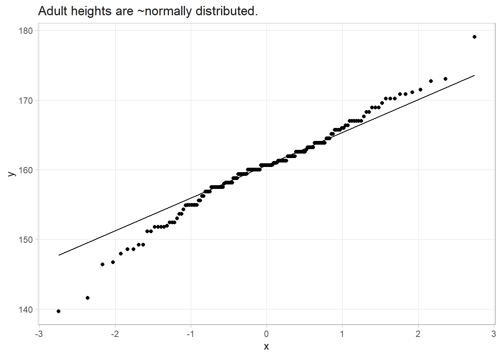
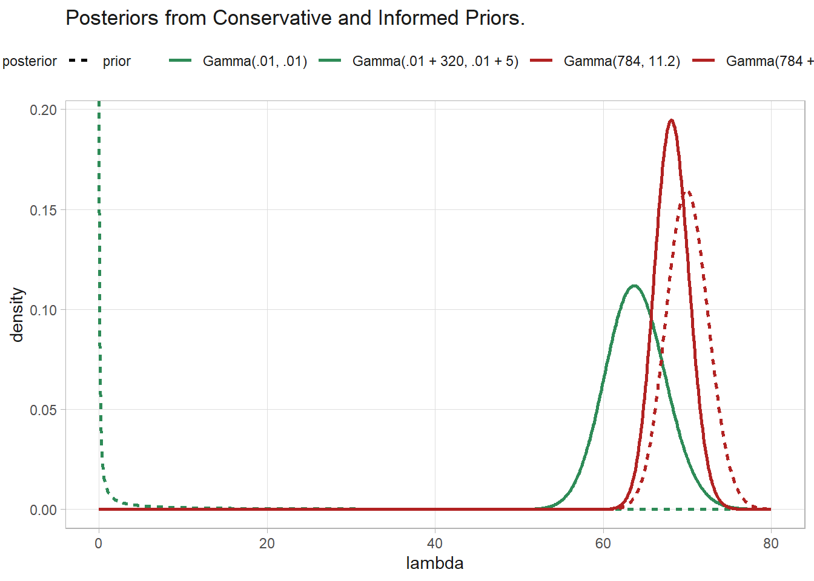
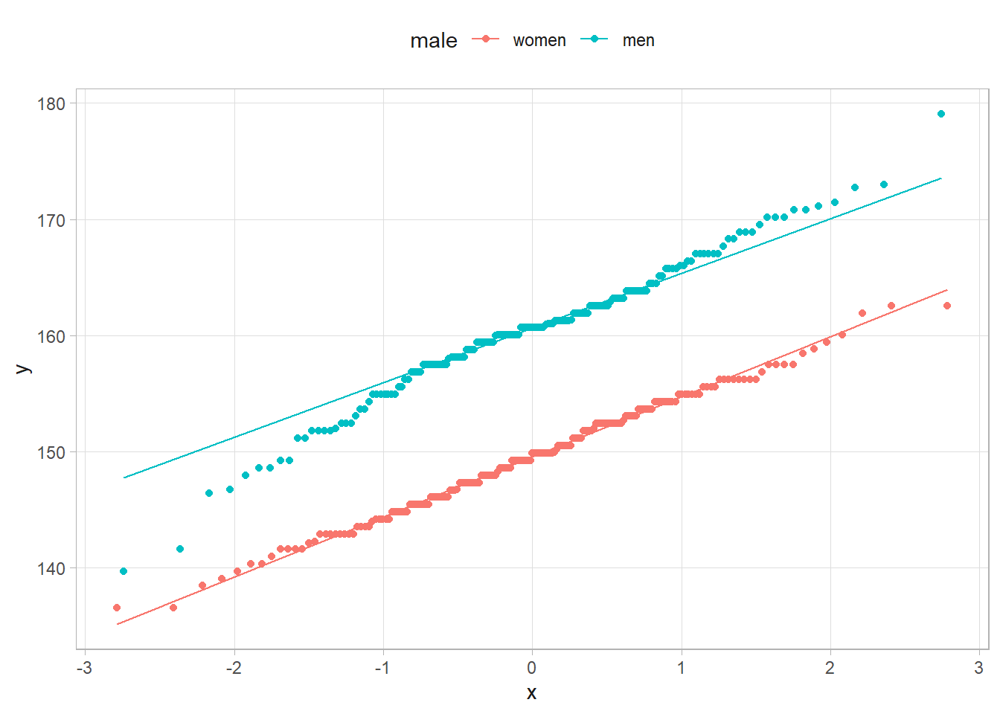
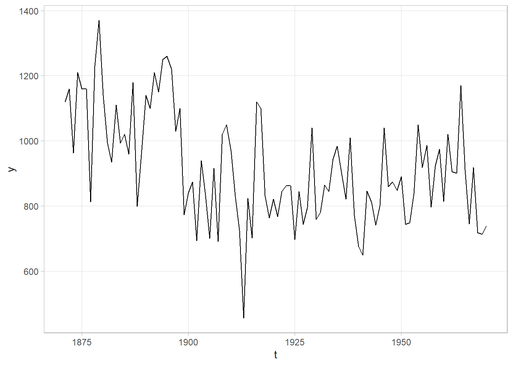
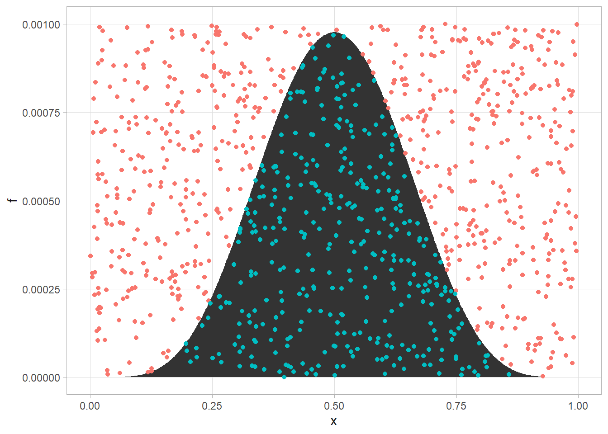
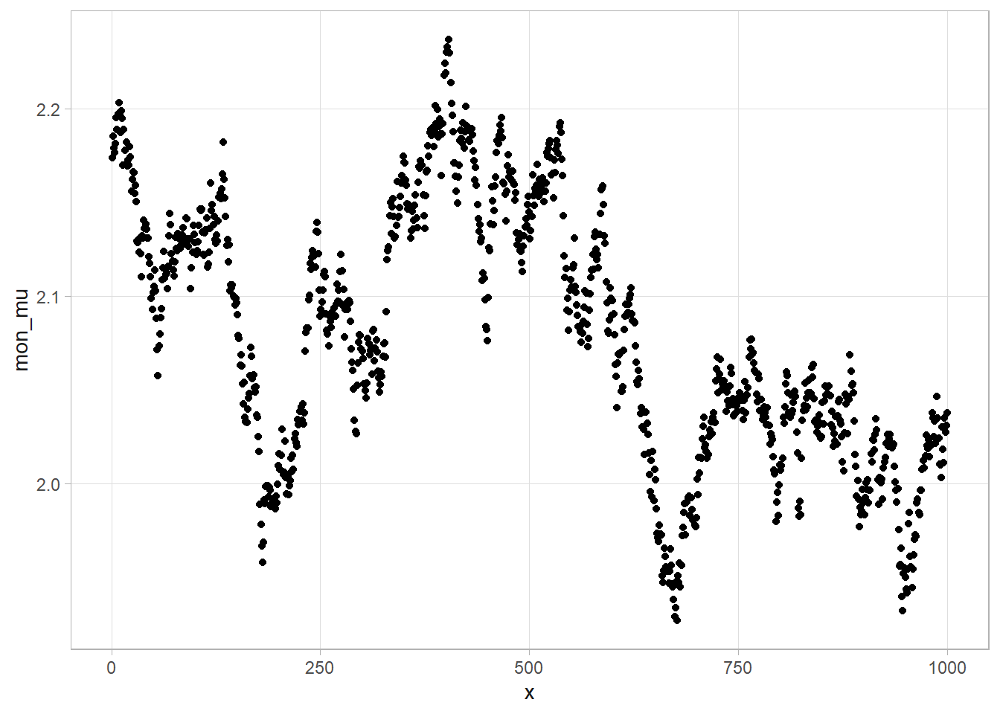

| E. Coli | Safe | Total |
|---|---|---|---|
Positive Test | .95 * .045 = 0.04275 | .01 * .955 = 0.00955 | 0.05230 |
Negative Test | .05 * .045 = 0.00225 | .99 * .955 = 0.94545 | 0.94770 |
Total | 0.04500 | 0.95500 | 1.00000 |
3 Bayesian Statistics
Bayesian inference is an alternative to classical (aka, frequentist) inference. Both methods assume a data generating mechanism expressed as a likelihood, but while classical inference treats the mechanism as infinitely repeatable, Bayesian inference treats each event as unique. Instead of estimating a single population parameter (usually the mean), Bayesian inference estimates the parameter distribution. In fact Bayesian inference insists that all uncertainties be described by probabilities. Finally, whereas the machinery of classical inference is maximizing likelihood, Bayesian inference updates a prior probability distribution in light of the new information.
3.1 Bayes’ Theorem
Bayes’ Theorem is the inverse conditional probability, the probability of the condition given the observed outcome. It reorganizes the relationship between joint probability and conditional probability.
\[ \begin{align} P(\theta D) = P(\theta|D)P(D) &= P(D|\theta)P(\theta) \\ P(\theta|D) &= \frac{P(D|\theta)P(\theta)}{P(D)} \end{align} \]
The probability of \(\theta\) after observing \(D\) is equal to the probability of observing \(D\) when \(\theta\) is true divided by the probability of observing \(D\) under any circumstance.
Think of \(P(\theta)\) as the strength of your belief prior to considering \(D\).
\(P(D|\theta)\) is the likelihood of observing \(D\) from a generative model with parameter \(\theta\). Likelihoods are probability densities, and are not quite the same as probabilities. For continuous variables, likelihoods will sum to greater than 1.1
\(P(D)\) is the likelihood of observing \(D\) from any prior. It is the marginal distribution, or prior predictive distribution of \(D\). The likelihood divided by the marginal distribution is the proportional adjustment made to the prior in light of the data.
\(P(\theta|D)\) is the strength of your belief posterior to considering \(D\).
One illustration of Bayes’ Theorem is interpreting medical tests. \(P(D|\theta)\) is the test’s sensitivity, the probability of a positive test result \(D\) when the condition \(\theta\) in fact exists. \(P(\theta)\) is the probability prior to testing, the general rate. The numerator of Bayes’ Theorem is the joint probability, the probability of having the condition and testing positive, \(P(D \theta) = P(D|\theta)P(\theta)\). However, there is another way to test positive - the false positive, \(P(D | \hat{\theta})\)! A test’s specificity is the probability of a negative test result when the condition does not exist. Specificity is the compliment of the false positive, \(P(\hat{D} | \hat{\theta}) = 1 - P(D | \hat{\theta})\). The denominator of Bayes’ Theorem is the overall probability of a positive test result.
\[ \begin{align} P(\theta|D) &= \frac{P(D|\theta)P(\theta)}{P(D)} \\ &= \frac{P(D|\theta)P(\theta)}{P(D|\theta)P(\theta) + P(D|\hat\theta)P(\hat\theta)} \\ &= \frac{\text{sensitivity} \cdot \text{prior}}{\text{sensitivity} \cdot \text{prior} + (1 - \text{specificity}) \cdot (1 - \text{prior})} \end{align} \]
Suppose E. Coli is typically present in \(P(\theta)\) = 4.5% of samples, and an E. Coli screen has a sensitivity of \(P(D|\theta)\) = 95% and a specificity of 1 - \(P(D|\hat\theta)\) = 99%. Given a positive test result, what is the probability that E. Coli is actually present?
\[P(\theta|D) = \frac{.95\cdot .045}{.95\cdot .045 + (1 - .99)(1 - .045)} = \frac{.04275}{.05230} = 81.7\%.\]
The elements of Bayes’ Theorem come directly from the contingency table. The first row is the positive test result. The probability of E. Coli is the joint probability of E. Coli and a positive test divided by the probability of a positive test.
3.2 Bayesian Inference
Bayesian inference extends the logic of Bayes’ Theorem by replacing the prior probability estimate that \(\theta\) is true with a prior probability distribution that \(\theta\) is true. Rather than saying, “I am x% certain \(\theta\) is true,” you say “I believe the probability that \(\theta\) is true is somewhere in a range that has maximum likelihood at x%”.
\[ f(\theta | D) = \frac{f(D|\theta) f(\theta)}{\int_\Theta f(D|\theta) f(\theta) d\theta} \]
This formula expresses the posterior distribution of \(\theta\) as a function of the prior distribution and new information. Let \(\Pi(\theta)\) be the prior probability function. \(\Pi(\theta)\) has a PMF or PDF \(f(\theta)\), and a set of conditional distributions, \(f(D|\theta)\), called the generative model that express the likelihood of observing \(D\) given \(\theta\). The posterior probability distribution of \(\theta\), conditioned on the observance of \(D\), is the joint distribution of \(D\) and \(\theta\) (aka joint density, the product of the likelihood and the prior) divided by the marginal distribution of \(D\) (aka marginal density or prior predictive distribution). For discrete cases, replace the integral with a sum. The numerator makes the posterior proportional to the prior. The denominator is a normalizing constant that scales the likelihood into a proper density function (whose values sum to 1).
It is easier to see how observed evidence shifts the probabilities of the priors into their posterior probabilities by working with discrete priors first. From there it is straight-forward to grasp the more abstract case of continuous prior and posterior distributions.
3.3 Markov Chain Monte Carlo (MCMC)
Markov chain Monte Carlo (MCMC) methods are a class of algorithms for random sampling from high-dimensional probability distributions. Whereas Monte Carlo methods draw independent samples from a distribution, MCMC draw samples where the next value is dependent on the prior sample, creating a chain that zeros in on the target. MCMC improves on the less efficient rejection sampling, grid search, etc. methods. An example will show how Bayesian inference works with the less efficient methods, and the more sophisticated MCMC methods.2
The Howell data set contains the height (cm) of 165 adult males. Human height has an \(\sim N(\mu, \sigma)\) distribution. What is the expected height of an adult male?
# downloaded this from
# https://github.com/rmcelreath/rethinking/blob/master/data/Howell1.csv
howell <-
read_delim("input/Howell1.csv", delim = ";", show_col_types = FALSE) %>%
filter(age >= 18, male == 1)
howell %>% ggplot(aes(sample = height)) + stat_qq() + geom_qq_line() +
labs(title = "Adult heights are ~normally distributed.")
3.3.1 The Classical Approach
The classical approach is to construct a 95% CI around the mean with a one-sample mean t test. The mean height is 160.4 (95% CI, 159.4 to 161.3) with standard deviation 6.0.
t.test(howell$height)
One Sample t-test
data: howell$height
t = 342.78, df = 164, p-value < 2.2e-16
alternative hypothesis: true mean is not equal to 0
95 percent confidence interval:
159.4348 161.2822
sample estimates:
mean of x
160.3585 3.3.2 Rejection Sampling
Rejection sampling samples the parameter space (\(\mu\) and \(\tau\)), then conditions on the observed evidence (\(\bar{y}\)).
ITER <- 10^5
set.seed(12345)
dat <- tibble(
mu = round(runif(ITER, 150, 170), 1),
tau = round(runif(ITER, .3, .6), 2),
sampled_height = round(rnorm(ITER, mu, 1/sqrt(tau)), 1)
)
# Condition on observed mean (160.4)
observed_mean <- round(mean(howell$height), 1)
dat %>%
filter(sampled_height == observed_mean) %>%
summarize(mu_mean = mean(mu), mu_025 = quantile(mu, .025), mu_975 = quantile(mu, .975))# A tibble: 1 × 3
mu_mean mu_025 mu_975
<dbl> <dbl> <dbl>
1 160. 157. 163.This is rather inefficient. We generated 100,000 data points, then conditioned on just the 533 that had the observed mean. Plus, we limited ourselves to one-decimal precision for the search. However, the result, 160.4 (95% CI, 157.3 to 163.4) was close to the classical estimate of 160.4 (95% CI, 159.4 to 161.3)
3.3.3 Gibbs Sampler
Section @ref(normal-pop-est) explains that if you have data from a normally distributed population \(\sim N(\mu, \sigma)\), you can use a normal prior for \(\mu \sim N(\mu_0, \tau_0)\) where \(\tau = 1 / \sigma^2\), and a gamma prior for \(\tau \sim \text{Gamma}(a, b)\). The posterior distributions are
\[ \begin{align} \mu|y & \sim N\left( \frac{n \tau \bar{y}}{n \tau + \tau_0}, n \tau + \tau_0 \right) \\ \tau|y & \sim \text{Gamma} \left( a = \frac{n}{2}, b = \frac{1}{2} \sum_i (y_i - \mu)^2 \right) \end{align} \]
The Gibbs sampler algorithm is to set priors, randomly sample from rnorm() and rgamma() to get posteriors, then make the posteriors the new priors for repeated iterations. After some burn-in period, the posteriors should stabilize. Take the mean and quantiles of the posteriors (minus the burn-in). From prior knowledge, we know average height is \(\mu_0 = 175 \pm 10\). As a rule of thumb, \(\pm\) is 2SD, so \(\sigma_0 = 5\) and therefore \(\tau_0 = 1 / 5^2\). For gamma, we can use priors \(a = .01\) and \(b = .01\).
set.seed(12345)
# Iterations
ITER <- 10^3
# Prior parameter values based on intuition or prior studies.
mu_0 <- 175
tau_0 <- 1 / 5^2
# Monitors to track burn-in.
monitor_mu <- numeric(ITER)
monitor_tau <- numeric(ITER)
# Initialize the algorithm.
(n <- nrow(howell))
## [1] 165
y <- howell$height
(y_bar <- mean(y))
## [1] 160.3585
(mu <- mean(y))
## [1] 160.3585
(tau <- 1 / var(y))
## [1] 0.027693
a <- .01
b <- .01
for(iter in 1:ITER) {
# mu
new_mu <- (n * tau * y_bar) / (n * tau + tau_0)
new_tau <- n * tau + tau_0
monitor_mu[iter] <- rnorm(1, new_mu, 1 / sqrt(new_tau))
# tau
new_a <- a + n/2
new_b <- b + .5 * sum((y-mu)^2)
monitor_tau[iter] <- rgamma(1, new_a, new_b)
# update state
mu <- monitor_mu[iter]
tau <- monitor_tau[iter]
}
# Discard burn-in and estimate.
mean(monitor_mu[-500])
## [1] 158.9003
quantile(monitor_mu[-500], c(.025, .975))
## 2.5% 97.5%
## 157.8919 159.8737
# Check out the burn-in. Actually looks like it took 1 iteration.
tibble(index = 1:ITER, M = monitor_mu) %>% ggplot(aes(x = index, y = M)) + geom_line()3.3.4 Metropolis-Hastings
The Metropolis-Hastings model is like MCMC except that the posterior is accepted with probability \(\min(R, 1)\) where \(R\) is
\[ R = \frac{f(y|\theta')f(\theta')}{f(y|\theta)f(\theta)} \frac{q(\theta|\theta')}{q(\theta'|\theta)} \]
If the proposed distribution is symmetric, the second term drops out and \(R\) is just the ratio of posterior distributions. The symmetric version is called Metropolis instead of Metropolis-Hastings.
Suppose your data is \(n = 100\) values from a \(N(\mu = 2, \tau = 1/4)\) distribution.
set.seed(12345)
# Iterations
ITER <- 10^3
# Prior parameter values based on intuition or prior studies.
mu_0 <- 175
tau_0 <- 1 / 5^2
# Monitors to track burn-in.
monitor_mu <- numeric(ITER)
monitor_tau <- numeric(ITER)
# Initialize the algorithm.
(n <- nrow(howell))[1] 165y <- howell$height
(y_bar <- mean(y))[1] 160.3585(mu <- mean(y))[1] 160.3585(tau <- 1 / var(y))[1] 0.027693a <- .01
b <- .01
for(iter in 1:ITER) {
# mu
new_mu <- (n * tau * y_bar) / (n * tau + tau_0)
new_tau <- n * tau + tau_0
proposed_mu <- rnorm(1, new_mu, 1 / sqrt(new_tau)) # tentative for now!
# tau
new_a <- a + n/2
new_b <- b + .5 * sum((y-mu)^2)
monitor_tau[iter] <- rgamma(1, new_a, new_b)
# update state
# log of the acceptance ratio
logR <- sum(dnorm(y, proposed_mu, 1/sqrt(tau), log = T)) - # new likelihood
sum(dnorm(y, mu , 1/sqrt(tau), log = T)) + # old likelihood
dnorm(proposed_mu, mu_0, 1/sqrt(tau_0), log = T) - # new prior
dnorm(mu , mu_0, 1/sqrt(tau_0), log = T) # old prior
# accept with probability min(R,1)
logU <- log(runif(1,0,1))
if(logU < logR) {mu <- new_mu}
monitor_mu[iter] <- mu # this is either current or the proposed.
tau <- monitor_tau[iter]
}
# Discard burn-in and estimate.
mean(monitor_mu[-500])[1] 158.9385quantile(monitor_mu[-500], c(.025, .975)) 2.5% 97.5%
158.5900 159.2169 # Check out the burn-in. Actually looks like it took 1 iteration.
tibble(index = 1:ITER, M = monitor_mu) %>% ggplot(aes(x = index, y = M)) + geom_line()3.3.5 Other Notes
One simple Bayesian approach is to run several (we’ll use 1,000) experiments that sample 100 ad impression events from an rbinom() generative model using a uniform prior distribution of 0-30% click probability. The resulting 1,000 row data set of click probabilities is the prior predictive distribution of \(D\), the denominator of Bayes’ Theorem. The subset where \(D = 13\) is the likelihood, \(P(D|\theta)\). The sampled \(\theta\)’s are the prior, \(P(\theta) = \text{unif}(.0, .3)\). Their product is the joint probability distribution, \(P(D|\theta)P(\theta)\), the numerator of Bayes’ Theorem. This method is called rejection sampling because you sample across the whole parameter space, then condition on the observed evidence.
df_sim <- tibble(
click_prob = runif(1000, 0.0, 0.3),
click_n = rbinom(1000, 100, click_prob)
)
df_sim %>%
mutate(is_13 = factor(click_n == 13, levels = c(TRUE, FALSE))) %>%
ggplot(aes(x = click_prob, y = click_n, color = is_13)) +
geom_point(alpha = 0.6, show.legend = FALSE) +
geom_hline(yintercept = 13, color = "steelblue", linetype = 1, linewidth = .5) +
scale_color_manual(values = c("TRUE" = "steelblue", "FALSE" = "gray80")) +
scale_y_continuous(breaks = c(seq(0, 40, 10), 13)) +
labs(title = "Joint probability of observed clicks and click probability",
subtitle = "with conditioning on 13 observed clicks.",
y = "clicks per 100 ads",
x = expression(theta))Condition the joint probability distribution on the 30 rows that produced 13 observed clicks to update the prior. The quantile() function returns the median and the .025 and .975 percentile values - the credible interval.
# median and credible interval
(sim_ci <- df_sim %>% filter(click_n == 13) %>% pull(click_prob) %>%
quantile(c(.025, .5, .975))) 2.5% 50% 97.5%
0.1030532 0.1428307 0.2028469 The posterior click rate likelihood is 14.3% with 95% credible interval (10.3%, 20.3%). Here is the density plot of the 30 simulations that produced the 13 clicks. The median and 95% credible interval are marked.
df_sim %>%
filter(click_n == 13) %>%
ggplot(aes(x = click_prob)) +
geom_density() +
geom_vline(xintercept = sim_ci[2]) +
geom_vline(xintercept = sim_ci[1], linetype = 2) +
geom_vline(xintercept = sim_ci[3], linetype = 2) +
# coord_cartesian(xlim = c(0, .3)) +
scale_x_continuous(breaks = c(seq(0, .3, .05), sim_ci), labels = percent_format(.1)) +
labs(title = "Posterior click likelihood distribution",
subtitle = glue("p = {percent(sim_ci[2], .1)}, 95%-CI (",
"{percent(sim_ci[1], .1)}, {percent(sim_ci[3], .1)})"),
x = expression(theta), y = "density (likelihood)")That’s pretty close to the classical result! Instead of sampling, you could define a discrete set of candidate click probabilities and calculate the click probability density for the 100 ad impressions. This method is called grid approximation.
df_bayes <- expand.grid(
click_prob = seq(0.01, .30, by = .001),
click_n = 0:100
) %>%
mutate(
prior = dunif(click_prob, min = 0, max = 0.3),
likelihood = dbinom(click_n, 100, click_prob),
probability = likelihood * prior / sum(likelihood * prior)
)
df_bayes %>%
mutate(is_13 = factor(click_n == 13, levels = c(TRUE, FALSE))) %>%
# filter(probability > .0001) %>%
ggplot(aes(x = click_prob, y = click_n, color = is_13)) +
geom_point(aes(color = probability), show.legend = FALSE, size = 1) +
geom_hline(yintercept = 13, color = "steelblue", linetype = 1, linewidth = .5) +
coord_cartesian(ylim = c(0, 50)) +
scale_y_continuous(breaks = c(seq(0, 50, 10), 13)) +
scale_color_gradient(low = "#FFFFFF", high = "steelblue") +
# scale_color_manual(values = c("TRUE" = "steelblue", "FALSE" = "gray20")) +
labs(title = "Joint probability of clicks and click probability.",
subtitle = "with conditioning on 13 observed clicks.",
y = "clicks per 100 ads",
x = expression(theta))Condition the joint probability distribution on the 13 observed clicks to update your prior. Resample the posterior probability to create a distribution.
df_bayes_13 <- df_bayes %>% filter(click_n == 13) %>%
mutate(posterior = probability / sum(probability))
sampling_idx <- sample(
1:nrow(df_bayes_13),
size = 10000,
replace = TRUE,
prob = df_bayes_13$posterior
)
sampling_vals <- df_bayes_13[sampling_idx, ]
(df_bayes_ci <- quantile(sampling_vals$click_prob, c(.025, .5, .975))) 2.5% 50% 97.5%
0.079 0.135 0.212 You can use a Bayesian model to estimate multiple parameters. Suppose you want to predict the water temperature in a lake on Jun 1 based on 5 years of prior water temperatures.
temp <- c(19, 23, 20, 17, 23)You model the water temperature as a normal distribution, \(\mathrm{N}(\mu, \sigma^2)\) with a prior distribution \(\mu = \mathrm{N}(18, 5^2)\) and \(\sigma = \mathrm{unif}(0, 10)\) based on past experience.
Using the grid approximation approach, construct a grid of candidate \(\mu\) values from 8 to 30 degrees incremented by .5 degrees, and candidate \(\sigma\) values from .1 to 10 incremented by .1 - a 4,500 row data frame.
mdl_grid <- expand_grid(mu = seq(8, 30, by = 0.5),
sigma = seq(.1, 10, by = 0.1))For each combination of \(\mu\) and \(\sigma\), the prior probabilities are the densities from \(\mu = \mathrm{N}(18, 5^2)\) and \(\sigma = \mathrm{unif}(0, 10)\). The combined prior is their product. The likelihoods are the products of the probabilities of observing each temp given the candidate \(\mu\) and \(\sigma\) values.
mdl_grid_2 <- mdl_grid %>%
mutate(
mu_prior = map_dbl(mu, ~dnorm(., mean = 18, sd = 5)),
sigma_prior = map_dbl(sigma, ~dunif(., 0, 10)),
prior = mu_prior * sigma_prior, # combined prior,
likelihood = map2_dbl(mu, sigma, ~dnorm(temp, .x, .y) %>% prod()),
posterior = likelihood * prior / sum(likelihood * prior)
)Calculate a credible interval by drawing 10,000 samples from the grid with sampling probability equal to the calculated posterior probabilities. Use the quantile() function to estimate the median and .025 and .975 quantile values.
sampling_idx <- sample(1:nrow(mdl_grid), size = 10000, replace = TRUE, prob = mdl_grid$posterior)
sampling_vals <- mdl_grid[sampling_idx, c("mu", "sigma")]
mu_ci <- quantile(sampling_vals$mu, c(.025, .5, .975))
sigma_ci <- quantile(sampling_vals$sigma, c(.025, .5, .975))
ci <- qnorm(c(.025, .5, .975), mean = mu_ci[2], sd = sigma_ci[2])
data.frame(temp = seq(0, 30, by = .1)) %>%
mutate(prob = map_dbl(temp, ~dnorm(., mean = ci[2], sd = sigma_ci[2])),
ci = if_else(temp >= ci[1] & temp <= ci[3], "Y", "N")) %>%
ggplot(aes(x = temp, y = prob)) +
geom_area(aes(y = if_else(ci == "N", prob, 0)),
fill = "firebrick", show.legend = FALSE) +
geom_line() +
geom_vline(xintercept = ci[2], linetype = 2) +
theme_minimal() +
scale_x_continuous(breaks = seq(0, 30, 5)) +
theme(panel.grid.minor = element_blank()) +
labs(title = "Posterior temperature probability",
subtitle = glue("mu = {ci[2] %>% scales::number(accuracy = .1)}, 95%-CI (",
"{ci[1] %>% scales::number(accuracy = .1)}, ",
"{ci[3] %>% scales::number(accuracy = .1)})"))
What is the probability the temperature is at least 18?
pred_temp <- rnorm(1000, mean = sampling_vals$mu, sampling_vals$sigma)
scales::percent(sum(pred_temp >= 18) / length(pred_temp))[1] "56%"gibbs_normal <- function(y, mu_0, tau_0, a, b, n_iter){
n <- length(y)
y_mean <- mean(y)
mu_sample <- tau_sample <- numeric(n_iter)
# starting values
mu_sample[1] <- mean(y)
tau_sample[1] <- 1 / var(y)
# Gibbs sampler
for(i in 2:n_iter){
# mu
tau <- tau_sample[i-1]
mean_mu <- (n * y_mean * tau + mu_0 * tau_0) / (n * tau + tau_0)
precision_mu <- n * tau + tau_0
mu_sample[i] <- rnorm(1, mean_mu, 1 / sqrt(precision_mu))
# tau
mu <- mu_sample[i-1]
tau_sample[i] <- rgamma(1, a + n/2, b + .5 * sum((y - mu)^2))
}
return(list(mu = mu_sample, tau = tau_sample))
}
set.seed(12345)
sample_m <- gibbs_normal(howell[howell$male == "men",]$height, 175, 1/5^2, .01, .01, 10^3)3.4 Gamma Poisson and Estimating Counts
The gamma and Poisson distributions are used to model count data. Consider the following counts of weekday sandwich sales. What is the expected value of sales?
y <- c(50, 65, 72, 63, 70)Count data have a Poisson distribution, \(y_i|\lambda \sim Pois(\lambda)\), with expected value \(\lambda\) and PMF \(f(y_i | \lambda) = e^{-\lambda}\frac{\lambda^{y_i}}{y_i!}\). Using Bayes’ Theorem, the posterior distribution of \(\lambda\) given evidence \(\textbf{y}\) is the joint likelihood of \(\lambda\) and \(\textbf{y}\) divided by the likelihood of \(\textbf{y}\).
\[ f(\lambda |\textbf{y}) = \frac{f(\mathbf{y}|\lambda) f(\lambda)}{\int_\Lambda f(\mathbf{y}|\lambda) f(\lambda) d\lambda} \]
The conditional likelihood, \(f(\textbf{y}|\lambda)\), is the sum-product of the Poisson distribution PMF.
\[ \begin{align} f(\textbf{y}|\lambda) = f(y_i,\ldots, y_n | \lambda) &= \prod_i f(y_i | \lambda) \\ &= \prod_i e^{-\lambda}\frac{\lambda^{y_i}}{y_i!} \end{align} \]
The prior distribution, \(f(\lambda)\), should take on only positive values. Model it with the gamma distribution, \(\lambda|a,b = \mathrm{Gamma}(a,b)\).
\[ f(\lambda) = f(\lambda | a,b) = \frac{b^a \lambda^{a-1} e^{-b\lambda}}{\Gamma(a)} \]
where \(\Gamma\) is the gamma function3. Substituting into Bayes’ Theorem and simplifying, you have this nightmare:
\[ f(\lambda |\textbf{y}) = \frac{\lambda^{a + \sum_i y_i-1}e^{-(b+n)\lambda}}{\int_0^\infty \lambda^{a + \sum_i y_i-1}e^{-(b+n)\lambda} d\lambda} \]
However, there is good news. The integration in the denominator removes the dependence on \(\lambda\), so \(f(\lambda |\textbf{y}, a, b)\) is proportional to the numerator up to a constant.
\[ f(\lambda |\textbf{y}) \propto f(\textbf{y} | \lambda) f(\lambda) \]
Since \(f(\lambda |\textbf{y})\) is a PMF, it integrates (sums) to 1 and you can always figure out the constant later. What makes this good news is that this has the form of the PDF of the gamma distribution.
\[ \begin{equation} \lambda | \textbf{y}, a, b \sim \mathrm{Gamma}(a + \sum_i y_i, b + n) (\#eq:gamma-posterior) \end{equation} \]
Equation @ref(eq:gamma-posterior) is the posterior distribution of \(\lambda\). We combined a gamma prior with the Poisson likelihood of evidence, \(\textbf{y}\), to produce a gamma posterior. We call priors that produce posteriors of the same form, conjugate priors for the likelihood. Conjugate priors are popular because of their computational convenience.
Return to the sandwich sales data. We need values to plug into Equation @ref(eq:gamma-posterior). For the gamma distribution, \(E(X) = a / b\) and \(\mathrm{Var}(X) = a / b^2\). You might guess from intuition that mean daily sandwich sales are 70 +/- 5. Interpreting +/- 5 as a 95% CI and using the rule of thumb that a 95% CI is 2 SD, \(\mathrm{Var} = (2.5)^2 = 6.25\). Solve for \(a = 784\) and \(b = 11.2\). We also have \(\sum_i y_i = 320\) and \(n = 5\).
\[ \lambda | \textbf{y}, a, b \sim \mathrm{Gamma}(784 + 320, 11.2 + 5) \sim \mathrm{Gamma}(1104, 16.2) \]
The posterior \(E(y) = 1104 / 16.2 = 68.1\) and \(\mathrm{Var}(y) = 1104 / 16.2^2 = 4.2\). Use the gamma distribution function to get the posterior 95% credible interval.
# Prior distribution
qgamma(p = c(.025, .975), 784, 11.2)
## [1] 65.18520 74.98392
# Posterior distribution
qgamma(p = c(.025, .975), 784 + 320, 11.2 + 5)
## [1] 64.18701 72.22621Whereas the prior expected mean daily sandwich sales was 70 (95% CI: 65, 75), the posterior is 68 (95% CI: 64, 72). Compare this to classical statistics: \(E(y) = \bar{y} = 64\), \(SE = \sqrt{\bar{y} / n} = 3.6\):
# Classical estimate
qnorm(p = c(.025, .975), 64, 3.6)
## [1] 56.94413 71.05587You might think that the reasonable Bayesian outcome was predicated on good \(a\) and \(b\) priors, but no. Suppose \(a = .01\) and \(b = .01\). The posterior is still reasonable.
# Informal prior
qgamma(p = c(.025, .975), .01 + 320, .01 + 5)
## [1] 57.06689 71.05964tibble(
lambda = seq(0, 80, .1),
`Gamma(.01, .01)` = dgamma(lambda, .01, .01),
`Gamma(.01 + 320, .01 + 5)` = dgamma(lambda, .01 + 320, .01 + 5),
`Gamma(784, 11.2)` = dgamma(lambda, 784, 11.2),
`Gamma(784 + 320, 11.2 + 5)` = dgamma(lambda, 784 + 320, 11.2 + 5)
) %>%
pivot_longer(-lambda) %>%
mutate(name = fct_inorder(name)) %>%
mutate(prior = if_else(str_detect(name, "\\+"), "posterior", "prior")) %>%
ggplot(aes(x = lambda, y = value, color = name, linetype = prior)) +
geom_line(linewidth = 1) +
scale_color_manual(values = c(rep("seagreen", 2), rep("firebrick", 2))) +
labs(color = NULL, linetype = NULL, y = "density",
title = "Posteriors from Conservative and Informed Priors.")
The Bayesian posterior approaches the classical \(\bar{y}\) with increasing sample size.
\[ E(\lambda|\textbf{y}, a, b) = \frac{a + \sum_i y_i}{b + n} = \frac{a + n \bar{y}}{b + n} \]
Taking the limit, \(\lim_{n \rightarrow \infty} E(\lambda|\textbf{y}, a, b) = \bar{y}\).
The central credible interval is the standard Bayesian credible interval. But when the posterior distribution is not perfectly symmetric, the shortest credible interval capturing x% of the distribution might have different endpoints. Our example has a pretty symmetric distribution, but let’s calculate the highest density region (HDR) anyway.
pp <- seq(0.01, .99, by = .0001)
x <- map_dbl(pp, ~qgamma(., 784 + 320, 11.2 + 5))
hdrcde::hdr(x, prob = 95)$hdr
## [,1] [,2]
## 95% 64.40786 71.86587The posterior predictive distribution of a predicted value, \(\tilde{y}\) is
\[ f(\tilde{y} | x) = \int f(\tilde{y}|\lambda) f(\lambda | \textbf{y}) d\lambda \]
Our sandwich example has a well defined functional solution: the expected value from \(\mathrm{Gamma}(1104, 16.2)\) is \(1104/16.2 = 68\). Had we not known this, we could have simulated posterior values (Monte Carlo simulation) and calculated the mean and variance. The procedure is to take a random sample of perhaps 1,000 \(\lambda\) values from the gamma posterior distribution, then for each \(\lambda\) draw a single random \(\tilde{y}\) from the Poisson distribution.
a <- 1104
b <- 16.2
set.seed(1234)
# random sample of lambdas, and a single random y_tilde for each lambda
lambda_r <- rgamma(1000, a, b)
y_tilde <- rpois(1000, lambda_r)
# posterior predictive distribution
mean(y_tilde)
## [1] 68.252
quantile(y_tilde, c(.025, .975))
## 2.5% 97.5%
## 50.975 85.000So on any given day, the predicted value of sandwich sales is 68.3 with 95% prediction interval 51.0, 85.0. The probability of exceeding 80 sandwiches, \(P(\tilde{y} > 80 | \textbf{y})\), is mean(y_tilde > 80) = 8.3%, and 99% of the time, sandwich sales will be less than quantile(y_tilde, .99) = 89.
You can also predict individual weekdays. Suppose you take a \(\mathrm{Gamma}(700, 10)\) distribution as your prior.
day_tbl <- tibble(
dow = fct_inorder(c("Mon", "Tue", "Wed", "Thu", "Fri")),
d = c(50, 65, 72, 63, 70)
) %>%
mutate(
post_a = 700 + d,
post_b = 10 + 1,
post_mean = post_a / post_b,
post_lci = qgamma(.025, post_a, post_b),
post_uci = qgamma(.975, post_a, post_b)
)
day_tbl# A tibble: 5 × 7
dow d post_a post_b post_mean post_lci post_uci
<fct> <dbl> <dbl> <dbl> <dbl> <dbl> <dbl>
1 Mon 50 750 11 68.2 63.4 73.1
2 Tue 65 765 11 69.5 64.7 74.6
3 Wed 72 772 11 70.2 65.3 75.2
4 Thu 63 763 11 69.4 64.5 74.4
5 Fri 70 770 11 70 65.1 75.0What is the probability that Mon sales are less than Tue?
set.seed(123)
lambda_r_mon <- rgamma(1000, 750, 11)
lambda_r_tue <- rgamma(1000, 765, 11)
# posterior probability
mean(lambda_r_mon < lambda_r_tue)
## [1] 0.664Which day of the week has the highest sandwich sales?
set.seed(12345)
lambda_r <- tibble(
r_mon = rgamma(1000, 750, 11),
r_tue = rgamma(1000, 765, 11),
r_wed = rgamma(1000, 772, 11),
r_thu = rgamma(1000, 763, 11),
r_fri = rgamma(1000, 770, 11),
r_dow = pmap(list(r_mon, r_tue, r_wed, r_thu, r_fri),
function(m, t, w, r, f) c(m, t, w, r, f)),
max_dow_idx = map_dbl(r_dow, ~which.max(.)),
max_dow = map_chr(max_dow_idx, ~c("Mon", "Tue", "Wed", "Thu", "Fri")[.])
)
lambda_r %>% janitor::tabyl(max_dow)
## max_dow n percent
## Fri 248 0.248
## Mon 77 0.077
## Thu 188 0.188
## Tue 190 0.190
## Wed 297 0.297Use the Deviance Information Criterion (DIC) to evaluate whether the day means differ from each other.
\[ DIC = p_D + \overline{D(\theta)} \]
where \(p_D = \overline{D(\theta)} - D(\hat{\theta})\) and \(D(\theta) = -2 \log (f(y|\theta)) + C\).
Evaluate \(\overline{D(\theta)}\) by producing samples from each distribution and evaluating the likelihoods of the data based on each realization and taking the mean of -2 log-likelihood.
# Reset the example. Sandwich counts by dow.
y <- c(50, 65, 72, 63, 70)
# Priors
a <- .01
b <- .01
# Posteriors
post <- list(
rgamma(10^3, a+y[1], b+length(y[1])),
rgamma(10^3, a+y[2], b+length(y[2])),
rgamma(10^3, a+y[3], b+length(y[3])),
rgamma(10^3, a+y[4], b+length(y[4])),
rgamma(10^3, a+y[5], b+length(y[5]))
)
# -2 * Mean log-likelihood
ll <-
dpois(y[1], post[[1]], log = TRUE) +
dpois(y[2], post[[2]], log = TRUE) +
dpois(y[3], post[[3]], log = TRUE) +
dpois(y[4], post[[4]], log = TRUE) +
dpois(y[5], post[[5]], log = TRUE)
(mean_D <- mean(-2 * ll))[1] 34.89608# D(theta-bar) is the likelihood of the data based on the posterior means of p.
(D_mean <- -2 * (
dpois(y[1], (a+y[1]) / (b+length(y[1])), log = TRUE) +
dpois(y[2], (a+y[2]) / (b+length(y[2])), log = TRUE) +
dpois(y[3], (a+y[3]) / (b+length(y[3])), log = TRUE) +
dpois(y[4], (a+y[4]) / (b+length(y[4])), log = TRUE) +
dpois(y[5], (a+y[5]) / (b+length(y[5])), log = TRUE)
))[1] 29.98793#p_D and DIC from equation
(p_D <- mean_D - D_mean)[1] 4.908155(DIC <- p_D + mean_D)[1] 39.80424# Repeat these steps for a single model of all groups
post_group <- rgamma(10^3, a+sum(y), b+length(y))
ll_group <-
dpois(y[1], post_group, log = TRUE) +
dpois(y[2], post_group, log = TRUE) +
dpois(y[3], post_group, log = TRUE) +
dpois(y[4], post_group, log = TRUE) +
dpois(y[5], post_group, log = TRUE)
(mean_D_group <- mean(-2 * ll_group))[1] 35.87018(D_mean_group <- -2 * (
dpois(y[1], (a+sum(y)) / (b+length(y)), log = TRUE) +
dpois(y[2], (a+sum(y)) / (b+length(y)), log = TRUE) +
dpois(y[3], (a+sum(y)) / (b+length(y)), log = TRUE) +
dpois(y[4], (a+sum(y)) / (b+length(y)), log = TRUE) +
dpois(y[5], (a+sum(y)) / (b+length(y)), log = TRUE)
))[1] 34.81027(p_D_group <- mean_D_group - D_mean_group)[1] 1.059915(DIC_group <- p_D_group + mean_D_group)[1] 36.9301The DIC for the weekday specific model is 39.8042369 and for the one common group model it is 36.9300995. The DIC for one common group model is smaller, so we do not have enough statistical evidence for two groups.
3.5 Normal and Estimating Means
3.5.1 Population Estimate
Suppose you have a sample, \(\textbf{y}\), from a normally distribution population of unknown mean and precision, \(\mu\) and \(\tau\): \(y_i|\mu, \tau \sim N(\mu, \tau)\).4 Assume a normal prior for \(\mu \sim N(\mu_0, \tau_0)\), and a gamma prior for \(\tau \sim \text{Gamma}(a, b)\) since it takes only positive values. The PDF for \(y_i\) is \(f(y_i | \mu, \tau) = \frac{\tau^{.5}}{\sqrt{2\pi}} \exp\left(-\frac{\tau}{2} (y_i - \mu)^2 \right)\). We’ll derive posterior distributions for \(\mu\) and \(\tau\) separately.
Using Bayes’ Theorem, the posterior distribution of \(\mu|y\) is the joint likelihood of \(y\) and \(\mu\) divided by the likelihood of \(y\),
\[ f(\mu|y) = \frac{f(y|\mu)f(\mu)}{\int_\mu f(y|\mu)f(\mu)d\mu} \]
The conditional likelihood, \(f(\mu|y)\), is the sum-product of the normal distribution PDF. We can take \(\tau\) as given initially.
\[ \begin{align} f(y|\mu) &= \prod_i \frac{\tau^{(1/2)}}{\sqrt{2\pi}} \exp\left(-\frac{\tau}{2} (y_i - \mu)^2 \right) \\ &\propto \prod_i \exp\left(-\frac{\tau}{2} (y_i - \mu)^2 \right) \\ &\propto \exp \left( -\frac{\tau}{2} \sum_i(y_i - \mu)^2 \right) \end{align} \]
The prior PDF for \(\mu\) is the normal distribution. Again we take \(\tau\) as given initially.
\[ \begin{align} f(\mu) &= \frac{\tau_0^{1/2}}{\sqrt{2\pi}} \exp\left(-\frac{\tau_0}{2} (\mu - \mu_0)^2 \right) \\ &\propto \exp\left(-\frac{\tau_0}{2} (\mu - \mu_0)^2 \right) \end{align} \]
Substitute into Bayes’ Theorem. Since we are working with proportions, we can throw out the denominator and say \(f(\mu|y) \propto f(y|\mu)f(\mu)\). Plugging in and solving, we get
\[ \begin{equation} \mu|y \sim N\left(\frac{n\tau\bar{y} + \tau_0\mu_0}{n\tau + \tau_0}, n\tau + \tau_0 \right) (\#eq:mu-posterior) \end{equation} \]
Using Bayes’ Theorem, the posterior distribution of \(\tau|y\) is the joint likelihood of \(y\) and \(\tau\) divided by the likelihood of \(y\),
\[ f(\tau|y) = \frac{f(y|\tau)f(\tau)}{\int_\tau f(y|\mu)f(\tau)d\tau} \]
The conditional likelihood, \(f(\tau|y)\), is the sum-product of the gamma distribution PDF. This time we take \(\mu\) as given.
\[ \begin{align} f(y|\tau) &= \prod_i \frac{\tau^{(1/2)}}{\sqrt{2\pi}} \exp\left(-\frac{\tau}{2} (y_i - \mu)^2 \right) \\ &= \frac{\tau^{n/2}}{(2\pi)^{n/2}} \exp\left(-\frac{\tau}{2} \sum_i (y_i - \mu)^2 \right) \\ &\propto \tau^{n/2} \exp \left( -\frac{\tau}{2} \sum_i(y_i - \mu)^2 \right) \end{align} \]
The prior PDF for \(\tau\) is the gamma distribution. Pull the constant out to work with proportionality.
\[ \begin{align} f(\tau) &= \frac{b^a \tau^{a-1} e^{-b\tau}}{\Gamma(a)} \\ &\propto \tau^{a-1}e^{-b\tau} \end{align} \]
Substitute into Bayes’ Theorem. Since we are working with proportions, we can throw out the denominator and say \(f(\tau|y) \propto f(y|\tau)f(\tau)\). Plugging in and solving, we get
\[ \begin{equation} \tau|y \sim \text{Gamma}\left(a + n/2, b + \frac{1}{2} \sum_i(y_i - \mu)^2 \right) (\#eq:tau-posterior) \end{equation} \]
We have \(y_i|\mu,\tau \sim N(\mu,\tau)\) with conjugate priors \(\mu \sim N(\mu_0, \tau_0)\) and \(\tau \sim \text{Gamma}(a,b)\) and conditional posterior distributions shown in Eqns @ref(eq:mu-posterior) and @ref(eq:tau-posterior). Returning to Eqn @ref(eq:mu-posterior), you can see how \(E[\mu] \rightarrow \bar{y}\) as the sample size grows. Below, the terms divided by \(n\) disappear, leaving just \(\bar{y}\).
\[ \begin{align} E[\mu|\tau, y] &= \frac{n\tau\bar{y} + \tau_0\mu_0}{n\tau + \tau_0} \\ &= \frac{\bar{y}\tau + \mu_0\tau_0/n}{\tau + \tau_0/n} \\ &\sim \bar{y} \end{align} \]
The posterior mean estimator of \(\tau\) is the ratio of the posterior gamma distribution parameters. Again, as the sample size increases, terms divided by \(n\) disappear.
\[ \begin{align} E[\tau|\mu,y] &= \frac{a + n/2}{b + \frac{1}{2} \sum_i(y_i - \mu)^2} \\ &= \frac{2a/n + 1}{2b/n + \sum_i(y_i - \mu)^2 / n} \\ &\sim \frac{1}{\sum_i(y_i - \mu)^2} \end{align} \]
The problem here is that you never know \(\mu\) or \(\tau\), so you cannot use the posterior formulas directly. Instead, you need to use sampling. In particular, you use the Gibbs sampler. Set \(\mu\) and \(\tau\) to some initial values and use the posterior equations to estimate new values for \(\mu\) and \(\tau\), then repeat. This is called Markov Chain Monte Carlo (MCMC) simulation because you are chaining the simulations. The method of sampling from a conditional posterior is called the Gibbs sampler.
Let’s apply this using anthropological data collected by Nancy Howell of human height.
# downloaded this from
# https://github.com/rmcelreath/rethinking/blob/master/data/Howell1.csv
howell <- read_delim("input/Howell1.csv", delim = ";", show_col_types = FALSE) %>%
filter(age >= 18) %>%
mutate(male = factor(male, labels = c("women", "men")))
howell %>%
ggplot(aes(sample = height, color = male)) +
stat_qq() +
geom_qq_line()
From prior knowledge, we know average human height is about \(175 \pm 10\) cm. Using the \(\pm\) = 2SD, the variance \(5^2\). Use vague priors of \(\mu \sim N(\mu_0 = 175, \tau_0 = 1/5^2)\) and \(\tau = \sim \text{Gamma}(a = .01, b = .01)\). Start by assigning starting values, \(\mu*\) and \(\tau*\)). Given \(\tau = \tau*\), sample a new value of \(\mu*\) from the normal distribution. Given \(\mu = \mu*\), sample a new value of \(\tau*\) from the gamma distribution. Then repeat.
gibbs_normal <- function(y, mu_0, tau_0, a, b, n_iter){
n <- length(y)
y_mean <- mean(y)
mu_sample <- tau_sample <- numeric(n_iter)
# starting values
mu_sample[1] <- mean(y)
tau_sample[1] <- 1 / var(y)
# Gibbs sampler
for(i in 2:n_iter){
# mu
tau <- tau_sample[i-1]
mean_mu <- (n * y_mean * tau + mu_0 * tau_0) / (n * tau + tau_0)
precision_mu <- n * tau + tau_0
mu_sample[i] <- rnorm(1, mean_mu, 1 / sqrt(precision_mu))
# tau
mu <- mu_sample[i-1]
tau_sample[i] <- rgamma(1, a + n/2, b + .5 * sum((y - mu)^2))
}
return(list(mu = mu_sample, tau = tau_sample))
}
set.seed(12345)
sample_m <- gibbs_normal(howell[howell$male == "men",]$height, 175, 1/5^2, .01, .01, 10^3)
sample_w <- gibbs_normal(howell[howell$male == "women",]$height, 175, 1/5^2, .01, .01, 10^3)
# posterior mu
mean(sample_m$mu); quantile(sample_m$mu, c(.025, .975))
## [1] 160.5146
## 2.5% 97.5%
## 159.6103 161.4231
mean(sample_w$mu); quantile(sample_w$mu, c(.025, .975))
## [1] 149.6363
## 2.5% 97.5%
## 148.9256 150.3641
# posterior probability that men are taller than women on average
mean(sample_m$mu > sample_w$mu)
## [1] 1
# posterior probability that a random man is taller than a random woman
tilde_m <- rnorm(10^3, mean(sample_m$mu), sqrt(1/mean(sample_m$tau)))
tilde_w <- rnorm(10^3, mean(sample_w$mu), sqrt(1/mean(sample_w$tau)))
mean(tilde_m > tilde_w)
## [1] 0.909
tibble(
iter = rep(1:10^3, 2),
sex = c(rep("men", 10^3), rep("women", 10^3)),
mu = c(sample_m$mu, sample_w$mu),
tau = c(sample_m$tau, sample_w$tau),
) %>%
pivot_longer(cols = c(mu, tau)) %>%
ggplot(aes(x = value, color = sex)) +
geom_density() +
facet_wrap(facets = vars(name), scales = "free") +
labs(title = "Posterior Distributions", x = NULL, color = NULL)
tibble(
iter = rep(1:10^3, 2),
sex = c(rep("men", 10^3), rep("women", 10^3)),
tilde = c(tilde_m, tilde_w)
) %>%
ggplot(aes(x = tilde, color = sex)) +
geom_density() +
labs(title = "Posterior Predictive Distributions", x = NULL, color = NULL)It may take some time to converge on a solution. This convergence is called burn-in and is often discarded when describing the posterior. Slow mixing may occur if there is high autocorrelation in the Gibbs sample, resulting in slow exploration of the sample space of the posterior.
3.5.2 Regression
The linear model in Bayesian statistics is
Likelihood:
\[ y_i | \mu_i, \tau \sim N(\mu_i, \tau) \]
where
\[ \mu_i | x_i, \beta_0, \beta_1 = \beta_0 + \beta_1 x \]
Priors:
\[ \begin{align} \beta_0 & \sim N(0, 10^{-8}) \\ \beta_1 & \sim N(0, 10^{-8}) \\ \tau & \sim \text{Gamma}(.01, .01) \end{align} \]
Returning to the Howell data, suppose you want to fit a linear model, \(\text{Weight}_i = a + b \text{Height} + \epsilon_i\). In Bayesian regression, this is expressed as \(\text{Weight} | \mu_i \sim N(\mu_i, \tau)\) where \(\mu_i = a + b\text{Height}\). You can construct a Gibbs sampler to estimate the model, but there is already a package for that, MCMCglmm.
library(MCMCglmm)
set.seed(12345)
mdl_1 <- MCMCglmm(
weight ~ height,
data = howell,
family = "gaussian",
nitt = 11000, # iterations
burnin = 1000, # burn-in period to throw out
thin = 10,
# could omit this prior since it is non-informative
prior = list(B = list(mu = c(0, 0), V = c(100^2, 100^2)*diag(2))),
verbose = FALSE
)
summary(mdl_1)
Iterations = 1001:10991
Thinning interval = 10
Sample size = 1000
DIC: 2020.205
R-structure: ~units
post.mean l-95% CI u-95% CI eff.samp
units 18.16 15.73 20.81 1000
Location effects: weight ~ height
post.mean l-95% CI u-95% CI eff.samp pMCMC
(Intercept) -52.5503 -61.9377 -44.0584 1000.0 <0.001 ***
height 0.6309 0.5717 0.6874 912.8 <0.001 ***
---
Signif. codes: 0 '***' 0.001 '**' 0.01 '*' 0.05 '.' 0.1 ' ' 1# Probability beta is >0
mean(mdl_1$Sol[, 2] > 0)[1] 1# Posterior inference.
new_data <- tibble(height = seq(130, 185, .1), weight = 0)
cred_intvl <- predict(mdl_1, newdata = , type = "response", interval = "confidence")
pred_intvl <- predict(mdl_1, newdata = , type = "response", interval = "prediction")
howell %>%
bind_cols(cred_intvl, pred_intvl, .name_repair = "unique") %>%
ggplot(aes(x = height)) +
geom_ribbon(aes(ymin = `lwr...9`, ymax = `upr...10`), fill = "lightgoldenrod", alpha = .5) +
geom_ribbon(aes(ymin = `lwr...6`, ymax = `upr...7`), fill = "goldenrod", alpha = .5) +
geom_line(aes(y = `fit...5`), color = "goldenrod", linewidth = 1) +
geom_point(aes(y = weight)) +
labs(y = "weight", title = "95% CI and PI.")You can extend this to multivariate models.
set.seed(12345)
mdl_2 <- MCMCglmm(
weight ~ height*male,
data = howell,
family = "gaussian",
nitt = 11000, # iterations
burnin = 1000, # burn-in period to throw out
thin = 10,
#prior = list(B = list(mu = c(0, 0), V = c(100^2, 100^2)*diag(2))),
verbose = FALSE
)Bayesian statistics has its analog to Akaike’s Information Criterion (AIC) called Deviance Information Criterion (DIC).
\[ DIC = p_D + \overline{D(\theta)} \]
where \(p_D = \overline{D(\theta)} - D(\hat{\theta})\) and \(D(\theta) = -2 \log (f(y|\theta)) + C\). The value of DIC has no real meaning, but for comparison purposes, lower is better. A difference of at least 3 is considered sufficient evidence to choose one model over another. Here, mdl_1$DIC = 2020.2047497 and mdl_2$DIC = 2023.9678623. The first model is better, so conclude that there is no statistical evidence that the correlation between weight and height depends on sex (\(\Delta\)DIC = 3.7631126).
mdl_3 <- MCMCglmm(
weight ~ age,
data = howell,
family = "gaussian",
nitt = 11000, # iterations
burnin = 1000, # burn-in period to throw out
thin = 10,
#prior = list(B = list(mu = c(0, 0), V = c(100^2, 100^2)*diag(2))),
verbose = FALSE
)
summary(mdl_3)
Iterations = 1001:10991
Thinning interval = 10
Sample size = 1000
DIC: 2306.323
R-structure: ~units
post.mean l-95% CI u-95% CI eff.samp
units 40.94 35.44 47.38 1000
Location effects: weight ~ age
post.mean l-95% CI u-95% CI eff.samp pMCMC
(Intercept) 47.85552 46.15454 49.74972 1000 <0.001 ***
age -0.06938 -0.10614 -0.02511 1000 <0.001 ***
---
Signif. codes: 0 '***' 0.001 '**' 0.01 '*' 0.05 '.' 0.1 ' ' 1mdl_1$DIC[1] 2020.205mdl_3$DIC[1] 2306.3233.5.3 Generalized Linear Models
The generalized linear model in Bayesian statistics is
Likelihood:
\[ y_i | \mu_i, \tau \sim D(\mu_i) \]
where
\[ g(\mu_i | x_i, \beta_0, \beta_1) = \beta_0 + \beta_1 x \]
Priors:
\[ \begin{align} \beta_0 & \sim N(0, 10^{-8}) \\ \beta_1 & \sim N(0, 10^{-8}) \\ \end{align} \]
Consider a binary response \(y_i\). You would typically model this with logistic regression:
\(y_i | p_i \sim \text{BIN}(1, p_i)\) where \(\log \left( \frac{p_i}{1 - p_i} \right) = \beta_0 + \beta_1 x_i\). In bivariate statistics, if \(x_i\) perfectly predicts \(y_i\), separation of variables has occurred. Here’s an example of separation of variables. In the regression, the standard errors are huge, so the p.value is nearly 1. The classical regression framework has broken down.
study <- read_csv("input/hours_of_study_data.csv", col_types = "dc") %>%
mutate(y = factor(y)) %>%
as.data.frame()
study %>% ggplot(aes(x = HoursOfStudy, y = y)) + geom_point()
summary(
glm(y ~ HoursOfStudy, data = study, family = "binomial")
)
##
## Call:
## glm(formula = y ~ HoursOfStudy, family = "binomial", data = study)
##
## Coefficients:
## Estimate Std. Error z value Pr(>|z|)
## (Intercept) -1303.9 442563.5 -0.003 0.998
## HoursOfStudy 13.1 4448.4 0.003 0.998
##
## (Dispersion parameter for binomial family taken to be 1)
##
## Null deviance: 6.8029e+01 on 49 degrees of freedom
## Residual deviance: 1.6529e-08 on 48 degrees of freedom
## AIC: 4
##
## Number of Fisher Scoring iterations: 25The Bayesian framework performs better.
set.seed(12345)
summary(
m.bayes <- MCMCglmm(y ~ HoursOfStudy, data = study, family = "categorical", verbose = FALSE)
)
Iterations = 3001:12991
Thinning interval = 10
Sample size = 1000
DIC: 2.652789
R-structure: ~units
post.mean l-95% CI u-95% CI eff.samp
units 9.636 0.008661 44.84 24.55
Location effects: y ~ HoursOfStudy
post.mean l-95% CI u-95% CI eff.samp pMCMC
(Intercept) -189.9191 -289.2550 -66.7212 1.966 <0.001 ***
HoursOfStudy 1.9036 0.6402 2.8894 1.889 <0.001 ***
---
Signif. codes: 0 '***' 0.001 '**' 0.01 '*' 0.05 '.' 0.1 ' ' 1Each hour of study is associated with an \(\exp (1.9036) \sim 6.7\)-fold increase in the odds of passing. The posterior probability that the association is positive is
mean(m.bayes$Sol[, 2] > 0)[1] 1Let’s try another example.
chase <- read_csv("input/TheChase.txt", show_col_types = FALSE)
# focus on Mark
mark <- chase %>% filter(Chaser == "Mark")
mark %>% ggplot(aes(x = TeamScore, y = Win)) + geom_jitter(width = 0)Notice: most scores are between 10 and 25, winning is less common than losing, and winning is more common with higher scores. Fit the following model: \(y_i \sim \text{Bin}(1, p_i)\) where \(\text{logit}(p_i) = \beta_0 + \beta_1 x_i\) and \(x_i\) is the mean score of game \(i\). Assume non-informative normal priors: \(\beta_0 \sim N(0, 10^{-8})\) and \(\beta_1 \sim N(0, 10^{-8})\).
library(rstanarm)# This will take ~1 min
m1 <- stan_glm(Win ~ TeamScore, data = mark,
family = binomial(link = "logit"),
prior = normal(location=0, scale=10^4),
prior_intercept = normal(location=0, scale=10^4),
chains=1, iter= 1500,
seed = 12345, refresh=0)m1post <- as.data.frame(m1)
par(mfrow=c(2,2))
plot(m1post[,1],ty='l',ylab=expression(beta[0]))
plot(density(m1post[,1]),xlab=expression(beta[0]),main='')
plot(m1post[,2],ty='l',ylab=expression(beta[1]))
plot(density(m1post[,2]),xlab=expression(beta[1]),main='')The traces look converged, and the estimated posterior densities look smooth.
df.summary <- data.frame(
p.means = round(apply(m1post,2,mean),4),
p.ci.lo = round(apply(m1post,2,quantile,.025),4),
p.ci.hi = round(apply(m1post,2,quantile,.975),4))
print(df.summary) p.means p.ci.lo p.ci.hi
(Intercept) -9.2615 -11.9893 -6.9141
TeamScore 0.4351 0.3175 0.5711There is a positive correlation between the Team Score and the odds of winning. Calculate the posterior probability.
mean(m1post[, 2] > 0)[1] 1Compare this to the classical result. They are pretty close.
summary(
m1c <- glm(Win ~ TeamScore, data = mark, family = "binomial")
)
Call:
glm(formula = Win ~ TeamScore, family = "binomial", data = mark)
Coefficients:
Estimate Std. Error z value Pr(>|z|)
(Intercept) -8.99425 1.28162 -7.018 2.25e-12 ***
TeamScore 0.42199 0.06615 6.379 1.78e-10 ***
---
Signif. codes: 0 '***' 0.001 '**' 0.01 '*' 0.05 '.' 0.1 ' ' 1
(Dispersion parameter for binomial family taken to be 1)
Null deviance: 261.45 on 245 degrees of freedom
Residual deviance: 195.35 on 244 degrees of freedom
AIC: 199.35
Number of Fisher Scoring iterations: 5Let’s also plot the estimated model on a grid of possible Team Score values. Recall \(p = \frac{1}{1 + e^{-z}}\),
# setting a grid of values
TeamScoreGrid <- seq(0:30)
# using posterior samples of beta0 and beta1
# to produce a posterior sample of probabilities at each value of TeamScoreGrid
p.eval <- function(Score,b0,b1){1/(1+exp(-(b0+b1*Score)))}
p.sample <- sapply(TeamScoreGrid,p.eval,b0=m1post[,1],b1=m1post[,2])
# evaluating posterior mean probability for each score:
p.post.mean <- apply(p.sample,2,mean)
# evaluating 95% CI for the probability for each score:
p.post.lo <- apply(p.sample,2,quantile,.025)
p.post.hi <- apply(p.sample,2,quantile,.975)
data.post <- data.frame(TeamScore=TeamScoreGrid, p.mn=p.post.mean,
p.lo=p.post.lo, p.hi=p.post.hi)
ggplot(data=mark,aes(x=TeamScore,y=jitter(Win)))+
geom_point()+
geom_ribbon(data=data.post,aes(x=TeamScore,y=p.mn,ymin=p.lo,ymax=p.hi),alpha=.5,fill='salmon') +
geom_line(data=data.post,aes(x=TeamScore,y=p.mn),col='red', linewidth=1.5)+
ylab('Outcome')+
scale_y_continuous(name='', breaks=c(0,1), labels=c('Lose','Win'),
sec.axis=sec_axis(~., breaks=seq(0,1,.2),
name='Probability of Winning'))+
xlim(c(0,30))data.post$TeamScore[which(data.post$ppp >= .80)][1][1] NAWhat is the posterior probability that a team score of 25 beats Mark?
p.eval(Score = 25, b0 = m1post[,1], b1 = m1post[,2]) %>% mean()[1] 0.8270518What score do you need in order to win with 80% certainty, \(P(y = 1|x) \ge .8)\). For each \(x\) on a grid, take the posterior sample for \(p\) and generate \(y = \text{Bern}(p)\). Then get \(prob(y == 1)\).
# simulating the game outcomes (y)
y.sample <- (array(runif(prod(dim(p.sample))),dim=dim(p.sample)) < p.sample)*1
# posterior predictive probabilities that y=1
data.post$ppp <- apply(y.sample,2,mean)
ggplot(data=data.post,aes(x=TeamScore,y=ppp))+
geom_line(col='red',size=1.5)+
geom_hline(aes(yintercept=0.80),col='blue',size=1.2,lty=2)+
geom_vline(aes(xintercept=24),col='brown',size=1.1,lty=2)+
geom_vline(aes(xintercept=25),col='brown',size=1.1,lty=2)+
ylab('Post. Pred. Prob. of Winning')+
xlim(c(0,30))+theme_gray(base_size=18)3.5.4 Missing Data
Consider a situation where 20 customers are surveyed to measure satisfaction. You can model this as \(x_i | p \sim \text{Bin}(1, p)\) where \(p\) is the probability of satisfaction. The conjugate prior for \(p\) is \(p \sim \text{Beta}(a, b)\). However, some observations are missing. You can divide the respondents into \(x_{obs}\) and \(x_{miss}\). Then
\[ f(x|p) = \prod_i f(x_i|p) = f(x_{obs}|p) f(x_{miss}|p) \]
When missingness is random, you can smiply discard missing observations. So if there were 4 missing responses, and 10 of the 16 completed surveys were satisfied, \(p|x_{obs} \sim \text{Beta}(1 + 10, 1 + 6)\). The Beta-bimomial conjugate model is
\[ \begin{align} x_i & \sim \text{Bin}(1, p) \\ p & \sim \text{Beta}(a, b) \end{align} \]
with posterior \(p | x \sim \text{Beta} \left( a + \sum_i x_i, b + \sum_i (1 - x_i) \right)\)
But if the data are not missing at random, you need to model the probability of participating. From past experience you might infer that participation rates are 30% for satisfied and 90% for dissatisfied.
\[ \begin{align} P(z_i = 1 | x_i = 1) &= .3 \\ P(z_i = 1 | x_i = 0) &= .9 \end{align} \]
Combining them, you have \(P(x_i = 1 | z_i = 0, p) = \frac{7p}{6p + 1}\). Set up a Gibbs sampler. Step 0: assign random prior values to the missing \(x\). Step 1: given \(x\), sample \(p\) from \(\text{Beta}(a + \sum_i x_i, b + \sum_i (1 - x_i))\). Step 2: given \(p\), assign the missing \(x\) to 1 with probability \(p|x_{obs} \sim \text{Beta}(1 + 10, 1 + 6)\).
# prior parameters
a <- 1; b <- 1
# data
x <- rep(c(1,0,NA),c(10,6,4))
z <- rep(1:0,c(16,4))
# initial values.
x.sample <- x; x.sample[is.na(x)] <- sample(0:1,size=4,replace=T)
# number of iterations
ITER <- 10^4+500
# and the monitor for recording the iterations of p
mon.p <- numeric(ITER)
# ... and one of the missing observations
mon.x20 <- numeric(ITER)
# Gibbs sampler:
for(iter in 1:ITER){
# sampling p
mon.p[iter] <- p <- rbeta(1,a+sum(x.sample),b+sum(1-x.sample))
# sampling (missing x)
x.sample[is.na(x)] <- rbinom(sum(is.na(x)),1,7*p/(6*p+1))
mon.x20[iter] <- x.sample[20]
}# prior parameters
a <- 1; b <- 1
# data: 40 satisfied, 10 not satisfied, 50 no-responses
x <- rep(c(1,0,NA),c(40,10,50))
z <- rep(1:0,c(50,50))
# what if all 50 were satisfied?
x <- rep(c(1,0,1),c(40,10,50))
z <- rep(1:0,c(50,50))
# what if all 50 were like the other 50?
x <- rep(c(1,0,1,0),c(40,10,40,10))
z <- rep(1:0,c(50,50))
# initial values.
x.sample <- x; x.sample[is.na(x)] <- sample(0:1,size=50,replace=T)
# number of iterations
ITER <- 10^4+500
# and the monitor for recording the iterations of p
mon.p <- numeric(ITER)
# ... and one of the missing observations
mon.x20 <- numeric(ITER)
# Gibbs sampler:
for(iter in 1:ITER){
# sampling p
mon.p[iter] <- p <- rbeta(1,a+sum(x.sample),b+sum(1-x.sample))
# sampling (missing x)
x.sample[is.na(x)] <- rbinom(sum(is.na(x)),1,7*p/(6*p+1))
mon.x20[iter] <- x.sample[20]
}
# Posterior mean probability of being satisfied.
mean(mon.p[501:10500])[1] 0.7947594# 95% CI
quantile(mon.p[501:10500], c(.025, .975)) 2.5% 97.5%
0.7122337 0.8661632 3.5.5 Change Point Regression
Let’s try another example. The Nile data set contains Nile flow by year. We want to ask whether the trend changed after 1897. Compare an intercept-only model, \(y_t \sim N(\mu_t, \tau)\) where \(\mu_t = \alpha\) is a constant, to a linear time trend model where \(\mu_t = \alpha + \beta \text{Year}\). Use conjugate non-informative priors, \(\alpha \sim N(0, 10^{-10})\) and \(\tau \sim \text{Gamma}(.01, .01)\).
data("Nile")
my_nile <- tibble(year = time(Nile), flow = Nile, after = as.numeric(year>1897))
# intercept-only
m0 <- MCMCglmm(flow ~ 1, data = my_nile,
nitt = 1500, burnin = 500, thin = 1,
prior = list(B = list(mu = 0, V = 10^10)),
verbose = FALSE)
# Trend
m1 <- MCMCglmm(flow ~ year, data = my_nile,
nitt = 1500, burnin = 500, thin = 1,
prior = list(B = list(mu = c(0, 0), V = diag(2)*10^10)),
verbose = FALSE)
# flow has been decreasing by 2.7 per year (95% CI, 1.6 - 3.7)
summary(m1)$solutions
## post.mean l-95% CI u-95% CI eff.samp pMCMC
## (Intercept) 6180.699732 4183.400324 8268.137317 1000 0.001
## year -2.739952 -3.865672 -1.741701 1000 0.001
# posterior probability of negative trend
mean(m1$Sol[, 2] < 0)
## [1] 1
# Change Point
m2 <- MCMCglmm(flow ~ after, data = my_nile,
nitt = 1500, burnin = 500, thin = 1,
prior = list(B = list(mu = c(0, 0), V = diag(2)*10^10)),
verbose = FALSE)
# Flow fell 244 from 1098.
summary(m2)$solutions
## post.mean l-95% CI u-95% CI eff.samp pMCMC
## (Intercept) 1097.3780 1048.3385 1143.4094 1000 0.001
## after -243.8701 -300.7758 -193.1304 1000 0.001
# Compare the DIC. m2 has smallest DIC.
m0$DIC
## [1] 1313.057
m1$DIC
## [1] 1290.783
m2$DIC
## [1] 1261.396This isn’t quite how you would want to do it, however. Instead, you’d like to determine which year the change point occurred. Define \(\mu_t = \alpha_0\) for \(t<t^*\), and \(\alpha_1\) for \(t \ge t^*\). Use conjugate non-informative priors for both, \(\alpha_0 = \alpha_1 \sim N(0, 10^{-8})\) and \(\tau \sim \text{Gamma}(.01, .01)\) and a uniform prior for \(t^* \sim U(1871.5, 1969.5\).
The posterior conditional distributions for \(\alpha_0\) and \(\alpha_1\) are from Eqns @ref(eq:mu-posterior).
\[ \begin{align} \alpha_0 | y,t^*,\tau & \sim N \left( \frac{\sum_{t<t^*} y_t \tau}{\sum_{t<t^*} 1 \tau + 10^{-8}}, \sum_{t<t^*} 1 \tau + 10^{-8} \right) \\ \alpha_1 | y,t^*,\tau & \sim N \left( \frac{\sum_{t\ge t^*} y_t \tau}{\sum_{t\ge t^*} 1 \tau + 10^{-8}}, \sum_{t\ge t^*} 1 \tau + 10^{-8} \right) \end{align} \]
The posterior conditional distribution for \(\tau\) needs to be derived from Bayes’ formula.
\[ \tau|x, t^*, \alpha_0, \alpha_1 \sim \text{Gamma} \left( .01 + \frac{n}{2}, .01 + .5 \sum_{t<t^*} (x_t - \alpha_0)^2 + .5 \sum_{t \ge t^*} (x_t - \alpha_1)^2 \right) \]
It is not possible to derive a posterior conditional distribution for \(t^*\), so use the Metropolis-Hastings algorithm. Given \(\alpha_0\), \(\alpha_1\), \(\tau\), and \(t^*\), propose a new value from the normal distribution centered at \(t^*\): \(t^{*'} \sim N(t^*, \delta)\) and accept the new value with probability \(min{1, R}\),
\[ R = \frac{f(y|\alpha_0, \alpha_1, t^{*'})f(t^{*'})}{f(y|\alpha_0, \alpha_1, t^*)} \frac{q(t^*|t^{*'})}{q(t^{*'}|t^*)} \]
The proposal distribution is symmetric, so you can drop the \(q()\) functions from the ratio (Metropolis algorithm).
Let’s start with a toy example to check the code.
# Create toy data set.
set.seed(12345)
ALPHA_0 <- 0
ALPHA_1 <- 1
TAU <- 1 / .1^2
CHGPT <- 25.5
dat <- tibble(t = 1:100, y = rnorm(100, ALPHA_0 + ALPHA_1*(t>CHGPT), 1 / sqrt(TAU)))
# Quick look at the data. A clear change point!
dat %>% ggplot(aes(x = t, y = y)) + geom_line()
# Set up a 1,500 iteration MCMC
ITER <- 1500
chgpt_delta <- .5
# Create monitors for each of the posterior distributions
mon_alpha_0 <- mon_alpha_1 <- mon_tau <- mon_chgpt <- numeric(ITER)
# Set initial values
n <- nrow(dat)
alpha_0 <- alpha_1 <- mean(dat$y); tau <- 1 / var(dat$y); chgpt <- median(dat$t)
for(iter in 1:ITER) {
# Gibbs step
alpha_0 <- rnorm(1, sum(dat$y[dat$t < chgpt]) * tau / (sum(dat$t < chgpt) * tau + 10^(-8)),
1 / sqrt(sum(dat$t < chgpt) * tau + 10^(-8)))
alpha_1 <- rnorm(1, sum(dat$y[dat$t >= chgpt]) * tau / (sum(dat$t >= chgpt) * tau + 10^(-8)),
1 / sqrt(sum(dat$t >= chgpt) * tau + 10^(-8)))
tau <- rgamma(1, .01 + n/2,
.01 +
.5 * sum(((dat$y - alpha_0)^2)[dat$t < chgpt]) +
.5 * sum(((dat$y - alpha_1)^2)[dat$t >= chgpt]))
# c(alpha_0, alpha_1, tau, chgpt)
# Metropolis step
chgpt_new <- rnorm(1, chgpt, sd = chgpt_delta)
log_R <- # difference in log-likelihoods =
# log-likelihood of new
(sum(dnorm(dat$y[dat$t < chgpt_new], alpha_0, 1 / sqrt(tau), log = TRUE)) +
sum(dnorm(dat$y[dat$t >= chgpt_new], alpha_1, 1 / sqrt(tau), log = TRUE))) -
# log-likelihood of curr
(sum(dnorm(dat$y[dat$t < chgpt], alpha_0, 1 / sqrt(tau), log = TRUE)) +
sum(dnorm(dat$y[dat$t >= chgpt], alpha_1, 1 / sqrt(tau), log = TRUE)))
log_U <- log(runif(1, 0, 1))
if(log_U < log_R) { chgpt <- chgpt_new}
# update monitors
mon_alpha_0[iter] <- alpha_0
mon_alpha_1[iter] <- alpha_1
mon_tau[iter] <- tau
mon_chgpt[iter] <- chgpt
}
# mine <- c(alpha_0, alpha_1, tau, chgpt, chgpt_new, log_R, log_U)
# Check for convergence
mon_tibble <- tibble(index = 1:ITER, alpha_0 = mon_alpha_0, alpha_1 = mon_alpha_1,
tau = mon_tau, chgpt = mon_chgpt)
mon_tibble_longer <-
mon_tibble %>%
pivot_longer(cols = -index)
mon_tibble_longer %>%
ggplot(aes(x = index, y = value)) +
geom_line() +
labs(y = NULL) +
facet_wrap(facets = vars(name), scales = "free_y")
# Convergence after 500 iterations, so throw them out.
# Posterior distributions
mon_tibble_longer %>%
filter(index > 500) %>%
mutate(name = if_else(name == "tau", "sigma", name),
value = if_else(name == "sigma", 1 / sqrt(value), value)) %>%
summarize(
.by = name,
M = mean(value),
SD = sd(value),
LCI = quantile(value, .025),
UCI = quantile(value, .975)
)
## # A tibble: 4 × 5
## name M SD LCI UCI
## <chr> <dbl> <dbl> <dbl> <dbl>
## 1 alpha_0 0.00100 0.0225 -0.0431 0.0462
## 2 alpha_1 1.03 0.0125 1.01 1.06
## 3 sigma 0.113 0.00822 0.0986 0.130
## 4 chgpt 25.5 0.287 25.0 26.0
# You can summarize the values by t to average the models.
# Recall the model is mu_t = alpha + beta*Year where alpha = alpha_0 or alpha_1
mon_tibble %>%
head(-500) %>%
mutate(
series = pmap(list(alpha_0, alpha_1, chgpt), function(a0, a1, c) {
t <- 1:100
y <- if_else(t < c, a0, a1)
rs <- tibble(t, y)
rs
})
) %>%
select(series) %>%
unnest(series) %>%
summarize(.by = t, y = mean(y), lci = quantile(y, .025), uci = quantile(y, .975)) %>%
ggplot(aes(x = t)) +
geom_line(aes(y = y)) +
geom_ribbon(aes(ymin = lci, ymax = uci))Now let’s apply what we’ve learned to the Nile data set. I’ll set the initial change point value at 1900 since that is around where the change seems to have occurred.
dat <- my_nile %>% rename(t = year, y = flow)
# Quick look at the data. A clear change point!
dat %>% ggplot(aes(x = t, y = y)) + geom_line()
# Set up a 1,500 iteration MCMC
ITER <- 1500
chgpt_delta <- .5
# Create monitors for each of the posterior distributions
mon_alpha_0 <- mon_alpha_1 <- mon_tau <- mon_chgpt <- numeric(ITER)
# Set initial values
n <- nrow(dat)
alpha_0 <- alpha_1 <- mean(dat$y); tau <- 1 / var(dat$y); chgpt <- 1900
for(iter in 1:ITER) {
# Gibbs step
alpha_0 <- rnorm(1, sum(dat$y[dat$t < chgpt]) * tau / (sum(dat$t < chgpt) * tau + 10^(-8)),
1 / sqrt(sum(dat$t < chgpt) * tau + 10^(-8)))
alpha_1 <- rnorm(1, sum(dat$y[dat$t >= chgpt]) * tau / (sum(dat$t >= chgpt) * tau + 10^(-8)),
1 / sqrt(sum(dat$t >= chgpt) * tau + 10^(-8)))
tau <- rgamma(1, .01 + n/2,
.01 +
.5 * sum(((dat$y - alpha_0)^2)[dat$t < chgpt]) +
.5 * sum(((dat$y - alpha_1)^2)[dat$t >= chgpt]))
# c(alpha_0, alpha_1, tau, chgpt)
# Metropolis step
chgpt_new <- rnorm(1, chgpt, sd = chgpt_delta)
log_R <- # difference in log-likelihoods =
# log-likelihood of new
(sum(dnorm(dat$y[dat$t < chgpt_new], alpha_0, 1 / sqrt(tau), log = TRUE)) +
sum(dnorm(dat$y[dat$t >= chgpt_new], alpha_1, 1 / sqrt(tau), log = TRUE))) -
# log-likelihood of curr
(sum(dnorm(dat$y[dat$t < chgpt], alpha_0, 1 / sqrt(tau), log = TRUE)) +
sum(dnorm(dat$y[dat$t >= chgpt], alpha_1, 1 / sqrt(tau), log = TRUE)))
log_U <- log(runif(1, 0, 1))
if(log_U < log_R) { chgpt <- chgpt_new}
# update monitors
mon_alpha_0[iter] <- alpha_0
mon_alpha_1[iter] <- alpha_1
mon_tau[iter] <- tau
mon_chgpt[iter] <- chgpt
}
# mine <- c(alpha_0, alpha_1, tau, chgpt, chgpt_new, log_R, log_U)
# Check for convergence
mon_tibble <- tibble(index = 1:ITER, alpha_0 = mon_alpha_0, alpha_1 = mon_alpha_1,
tau = mon_tau, chgpt = mon_chgpt)
mon_tibble_longer <-
mon_tibble %>%
pivot_longer(cols = -index)
mon_tibble_longer %>%
ggplot(aes(x = index, y = value)) +
geom_line() +
labs(y = NULL) +
facet_wrap(facets = vars(name), scales = "free_y")
# Convergence after 500 iterations, so throw them out.
# Posterior distributions
mon_tibble_longer %>%
filter(index > 500) %>%
mutate(name = if_else(name == "tau", "sigma", name),
value = if_else(name == "sigma", 1 / sqrt(value), value)) %>%
summarize(
.by = name,
M = mean(value),
SD = sd(value),
LCI = quantile(value, .025),
UCI = quantile(value, .975)
)
## # A tibble: 4 × 5
## name M SD LCI UCI
## <chr> <dbl> <dbl> <dbl> <dbl>
## 1 alpha_0 1097. 24.3 1049. 1144.
## 2 alpha_1 850. 15.8 819. 881.
## 3 sigma 130. 9.31 113. 150.
## 4 chgpt 1898. 0.728 1896. 1899.
# You can summarize the values by t to average the models.
# Recall the model is mu_t = alpha + beta*Year where alpha = alpha_0 or alpha_1
mon_tibble %>%
head(-500) %>%
mutate(
series = pmap(list(alpha_0, alpha_1, chgpt), function(a0, a1, c) {
t <- 1:100
y <- if_else(t < c, a0, a1)
rs <- tibble(t, y)
rs
})
) %>%
select(series) %>%
unnest(series) %>%
summarize(.by = t, y = mean(y), lci = quantile(y, .025), uci = quantile(y, .975)) %>%
ggplot(aes(x = t)) +
geom_line(aes(y = y)) +
geom_ribbon(aes(ymin = lci, ymax = uci))3.5.6 Cluster Analysis
You can use Bayes for mixtures. Suppose you have a mixture of \(z_i \in [1, 2, 3]\) types of grains with mean diameters of 3.8, 5, and 8mm. Given a grain of diameter \(x_i\), what is its class, \(z_i\)?
cinderella <- tibble(
z = c(rep(1, 200), rep(2, 100), rep(3, 300)),
x = c(rnorm(200, 3.8, .25), rnorm(100, 5, .5), rnorm(300, 8, 1))
)You might start with the assumption that \((x_i|z_i, \mu_{z_i}, \tau_{z_i}) \sim N(\mu_{z_i}, \tau_{z_i})\) and assign conjugate priors \(\mu_k \sim N(\mu_{k0}, \tau_{k0})\) and \(\tau_k \sim \text{Gamma}(a_k, b_k)\) for \(k = 1, \ldots, 3\). To estimate the class probabilities of each grain, you need to start with a prior. \(Pr(z_i = k) = 1/K = 1/3\) is a good prior.
The problem becomes
\[ \begin{align} Pr(z_i = k|x_i, \mu_k, \tau_k) &= \frac{f(x_i|z_i = k, \mu_k, \tau_k) Pr(z_i = k)}{\sum_k f(x_i|z_i = k, \mu_k, \tau_k) Pr(z_i = k)} \\ &= \frac{f(x_i|z_i = k, \mu_k, \tau_k)}{\sum_k f(x_i|z_i = k, \mu_k, \tau_k)} \end{align} \]
NMixMCMC() assigns initial values for \(\mu s\), \(\tau s\) and \(z_i s\). Given \(\mu s\) and \(\tau s\), it samples \(z_i s\) from the assumed distribution. For each group, \(k\), sample \(\mu_k\) and then \(\tau_k\) from the conjugate conditional posterior distribution. Then repeat until convergence.
library(mixAK)
mdl_mix <- NMixMCMC(
y0 = cinderella$x,
nMCMC = c(burn = 1000, keep = 1000, thin = 1, info = 100),
prior = list(priorK = "fixed", Kmax = 3)
)
##
## Chain number 1
## ==============
## MCMC sampling started on Wed Mar 26 13:33:56 2025.
## Burn-in iteration 1002003004005006007008009001000
## Iteration 1100120013001400150016001700180019002000
## MCMC sampling finished on Wed Mar 26 13:33:56 2025.
##
## Chain number 2
## ==============
## MCMC sampling started on Wed Mar 26 13:33:56 2025.
## Burn-in iteration 1002003004005006007008009001000
## Iteration 1100120013001400150016001700180019002000
## MCMC sampling finished on Wed Mar 26 13:33:56 2025.
##
## Computation of penalized expected deviance started on Wed Mar 26 13:33:56 2025.
## Computation of penalized expected deviance finished on Wed Mar 26 13:33:57 2025.
# posterior means mu
c(mdl_mix[[1]]$poster.mean.mu * sd(cinderella$x)) + mean(cinderella$x)
## [1] 3.767875 4.914559 8.100875
# posterior means for SD
sqrt(c(unlist(mdl_mix[[1]]$poster.mean.Sigma)))*sd(cinderella$x)
## j1 j2 j3
## 0.2573165 0.6120158 0.9945381
# estimated class frequency distribution
round(mdl_mix[[1]]$poster.mean.w, 2)
## w1 w2 w3
## 0.31 0.20 0.49
# estimated probability per class of first few seeds
mdl_mix[[1]]$poster.comp.prob_u %>% head()
## [,1] [,2] [,3]
## [1,] 0.951 0.049 0.000
## [2,] 0.697 0.303 0.000
## [3,] 0.932 0.068 0.000
## [4,] 0.916 0.084 0.000
## [5,] 0.477 0.522 0.001
## [6,] 0.921 0.079 0.000
# Marginal plot
NMixPredDensMarg(mdl_mix[[1]], lgrid = 150) %>% plot()In this case we new how many classes were in the data. If that was unknown, you could use reversible-jump MCMC which produces a posterior distribution for the number of components.
3.6 Beta Binomial and Estimating Proportions
Suppose \(y = 35\) of \(n = 50\) seeds germinate within 72hrs. What is the expected germination probability of a single seed? Seed germination can be modeled as \(n\) Bernoulli trials where events occur with probability, \(p\), and the number of observed events is \(y = \sum_i^n y_i\). The question is estimating the \(p\) parameter in the Bernoulli generating process.
The classical approach is to construct a 95% CI around \(p\) with a one-sample proportion test.
y <- 35
n <- 50
prop.test(y, n)
1-sample proportions test with continuity correction
data: y out of n, null probability 0.5
X-squared = 7.22, df = 1, p-value = 0.00721
alternative hypothesis: true p is not equal to 0.5
95 percent confidence interval:
0.5521660 0.8171438
sample estimates:
p
0.7 The Bayesian approach is to posit an expected distribution of \(p\) prior to observing the data, then update the distribution based on the relative likelihood of observing the data given the values in the distribution. The likelihood of \(y\) events in \(n\) trials follows the binomial distribution, \(y|p \sim \text{Bin}(n, p)\).
\[ f(y|p) = {n \choose y} p^y (1-p)^{n-y} \]
Start with a uniform prior - all values of \(p\) are equally likely. To get a feel for the approach, try this with discrete \(p\) values first.
# Explore the parameter space [0,1] in discrete .01 increments.
p <- seq(0, 1, by = 0.01)
# Prior distribution is uniform, 1/101 for all p's.
prior <- rep(1/length(p), length(p))
# Binomial likelihood of each p given 35/50 successes.
likelihood <- dbinom(35, 50, p)
# Bayes' Theorem: posterior = joint density / marginal density.
joint_density <- likelihood * prior
marginal_density <- sum(joint_density)
posterior <- joint_density / marginal_density
# 95% credible interval
(pi <- sum(posterior * p) / sum(posterior))
## [1] 0.6923077
(ci <- p[c(min(which(cumsum(posterior) > .025)),
max(which(cumsum(posterior) < .975)))])
## [1] 0.56 0.80
tibble(p, prior, update = likelihood / marginal_density / 101, posterior) %>%
pivot_longer(c(prior, update, posterior)) %>%
mutate(name = factor(name, levels = c("prior", "update", "posterior"))) %>%
ggplot(aes(x = p)) +
geom_line(aes(y = value, color = name)) +
geom_area(data = tibble(p, posterior, y = if_else(p <= ci[1], posterior, NA_real_)),
aes(y = y), fill = "#619CFF") +
geom_area(data = tibble(p, posterior, y = if_else(p >= ci[2], posterior, NA_real_)),
aes(y = y), fill = "#619CFF") +
geom_vline(aes(xintercept = pi), color = "#619CFF") +
scale_x_continuous(breaks = round(c(seq(0, 1, 1), ci, pi), 4)) +
labs(y = "density", color = NULL, title = "From Prior to Posterior",
subtitle = "Data: y=35, n=50. Posterior equals update.")This was good, but we could have done better. The discrete values for the uniform prior limited the precision of the 95% CI. The better path is to model continuous values with the beta distribution, \(p \sim \text{Beta}(a, b)\). The PDF of the beta distribution is
\[ \begin{align} f(p) &= \frac{1}{\text{B}(a,b)} p^{a-1} (1-p)^{b-1} \\ &\propto p^{a-1} (1 - p)^{b -1} (\#eq:beta-prior) \end{align} \]
where \(a\) is the success count, \(b\) the failure count, and \(\text{B} = \frac{\Gamma(a)\Gamma(b)}{\Gamma(a+b)}\) is the beta function. Equation @ref(eq:beta-prior) is called the beta prior. The beta prior is a conjugate prior, meaning the posterior distribution is also a beta distribution, so the \(\frac{1}{\text{B}(a,b)}\) cancels out and the proportional form is all you need. The uniform prior distribution would be modeled with \(\text{Beta}(1, 1)\).
The likelihood of observing \(y\) successes in \(n\) trials given \(p\) follows the binomial PMF. The constant binomial coefficient can be discarded.
\[ \begin{align} f(y|p) &= {n \choose y} p^y (1-p)^{n-y} \\ &\propto p^y (1-p)^{n-y} (\#eq:beta-likelihood) \end{align} \]
The product of the prior and likelihood is the joint density. The marginal density is the integral of the joint density over all \(p\).
\[ \begin{equation} \int_{p=0}^1f(y|p) f(p) dp = \frac{\text{B}(a + y, b + (n-y))}{\text{B}(a, b)} (\#eq:beta-marginal) \end{equation} \]
Using the proportional forms, the denominator of Bayes’ Theorem can be discarded, so the posterior distribution is just the joint density.
\[ \begin{align} f(p|y) & \propto f(y|p)f(p) \\ & \propto p^y (1-p)^{n-y} p^{a-1} (1 - p)^{b -1} \\ & \propto p^{a+y-1}(1-p)^{b+n-y-1} \\ & \sim \text{Beta}(a + y, b + (n - y)) (\#eq:beta-posterior) \end{align} \]
The expected value of the beta distribution is \(a / (a + b)\). Updated with the observed data, the expected value is
\[ E(p|y) = \frac{a+y}{(a+y)+(b+(n-y))} = \frac{a + y}{a + b + n} = \frac{a + n \bar{y}}{a + b + n} \]
As the sample size increases, the \(a\) and \(b\) prior parameter values become less important and \(E(p|y)\) converges on the classical result of \(\bar{y}\). The code chunk below repeats the exercise above. This time that we can calculate a continuous 95% CI. Notice also that the marginal density never actually factored into the solution.
# These discrete p's are for illustrating the distributions now.
p <- seq(0, 1, by = 0.001)
# The prior distribution is uniform, Beta(1, 1).
a <- 1
b <- 1
prior <- dbeta(p, a, b)
# Instead of calculating the likelihood, joint density, marginal density, and
# finally the posterior, we can go straight to the posterior.
posterior <- dbeta(p, a + y, b + (n - y))
# 95% credible interval. This time we don't need p - we can go straight to the soln.
(pi <- (a + y) / ((a + y) + (b + (n - y))))
## [1] 0.6923077
(ci <- qbeta(c(.025, .975), a + y, b + (n - y)))
## [1] 0.5617113 0.8088960
# Construct the components anyway, just to graph them.
likelihood <- dbinom(y, n, p)
joint_density <- likelihood * prior
marginal_density <- sum(joint_density)
# Trickery to get discretely calculated joint and marginal densities to sum to
# same area as prior and posterior distributions.
update <- likelihood / (sum(likelihood) / sum(posterior))
tibble(p, prior, update, posterior) %>%
pivot_longer(c(prior, update, posterior)) %>%
mutate(name = factor(name, levels = c("prior", "update", "posterior"))) %>%
ggplot(aes(x = p)) +
geom_line(aes(y = value, color = name)) +
geom_area(data = tibble(p, posterior, y = if_else(p <= ci[1], posterior, NA_real_)),
aes(y = y), fill = "#619CFF") +
geom_area(data = tibble(p, posterior, y = if_else(p >= ci[2], posterior, NA_real_)),
aes(y = y), fill = "#619CFF") +
geom_vline(aes(xintercept = pi), color = "#619CFF") +
scale_x_continuous(breaks = round(c(seq(0, 1, 1), ci, pi), 4)) +
labs(y = "density", color = NULL, title = glue("From Prior to Posterior, using Beta({a}, {b}) prior."),
subtitle = "Data: y=35, n=50.")Suppose your prior was better. You had taken a small sample of 10 and 7 seeds had germinated. The corroborating evidence centers on 70% and the credible interval tightens.

3.7 Zero-Inflation and Latent Variables
Suppose 100 persons report the number of days per week they consume alcohol (0 - 7). What is the posterior estimated probability of a person having a drink on any given day? Drinking days should follow a binomial distribution, so you should be able to estimate \(p\) using a \(\text{Beta}(1, 1)\) prior. The beta posterior would be \(\text{Beta}(252, 450)\).
days <- 0:7
respondents <- c(22, 6, 18, 23, 18, 10, 3, 0)
y <- rep(days, respondents)
# Total events
(drinking_days <- sum(y))
## [1] 251
# Possible events
(n <- 7 * 100)
## [1] 700
# Beta posterior
(a <- 1 + drinking_days)
## [1] 252
(b <- 1 + (n - drinking_days))
## [1] 450
# Posterior mean and 95% CI.
a / (a + b)
## [1] 0.3589744
qbeta(c(.025, .975), a, b)
## [1] 0.3239070 0.3948028The predictive distribution of \(\tilde{y}\) is \(f(\tilde{y}|y) = \int f(\tilde{y}|p) f(p|y) dp\). The way you would normally solve this is to run a simulation. Sample a thousand \(p\)’s from the posterior beta distribution, then use them to sample 100 respondents from the binomial distribution.
set.seed(12345)
p_given_y <- rbeta(10^3, a, b)
# For each p, simulate 7 draws from binomial distribution for the 100 respondents.
sims <- map(p_given_y, ~rbinom(100, 7, .))
# Count the number of times y == [0,7]. Start by converting the 10^3 sims x 100
# participants list into an 8 days x 10^3 sims list. The three metrics are
# vectors of length 8.
sim_y_per_days <- map(days, function(x) map_int(sims, ~sum(. == x)))
means <- map_dbl(sim_y_per_days, mean)
lcl <- map_dbl(sim_y_per_days, ~quantile(.x, .025))
ucl <- map_dbl(sim_y_per_days, ~quantile(.x, .975))
tibble(days, respondents, means, lcl, ucl) %>%
ggplot(aes(x = days)) +
geom_col(aes(y = respondents)) +
geom_point(aes(y = means)) +
geom_errorbar(aes(ymin = lcl, ymax = ucl), width = .2) +
scale_x_continuous(breaks = 0:7)Uh oh! The problem is that the number of drinking days only follows a binomial distribution for drinkers - abstainers have \(p\) = 0. This phenomena is called zero-inflation. The solution is to model \(p\) conditional on the probability the person drinks, \(\omega\). Let \(z_i = 1\) if respondent \(i\) drinks alcohol at all. Then \((y_i|z_i = 1, p) \sim \text{Bin}(7, p)\), otherwise \(P(y_i =0|z_i = 0) = 1\). Model the probability of \(z_i = 0\) with the Bernoulli distribution, \(z_i|\omega \sim \text{Bern}(\omega)\) where \(\omega \sim \text{Beta}(a_\omega, b_\omega)\).
Implement a Gibbs sampler with uniform priors for \(p \sim \text{Beta}(a = 1, b = 1)\) and \(\omega \sim \text{Beta}(a_\omega = 1, b_\omega = 1)\). Start with the assumption that if \(y_i = 0\) then \(z_i = 0\), so for each respondent
\[ \begin{align} P(z_i = 1| y_i > 0, p, \omega) &= 1 \\ P(z_i = 1| y_i = 0, p, \omega) &= \frac{(1-p)^7 \omega}{(1-\omega) + (1-p)^7 \omega} \end{align} \]
set.seed(12345)
# Start with assumption that if they reported 0, they _never_ drink (y_i=0 -> z_i=0).
z <- as.numeric(y >= 1)
# Run 1,000 iterations, updating p, omega, and z each time.
ITER <- 10^3
# Create monitors to track convergence.
sim_p <- numeric(ITER)
sim_omega <- numeric(ITER)
sim_z <- matrix(nrow = length(y), ncol = ITER)
# Gibbs sampler.
for(iter in 1:ITER) {
# Uniform Beta(1,1) prior for probability the person is a drinker. Posterior
# is based on count of non-zero z's.
omega <- rbeta(1, 1 + sum(z), 1 + (length(z) - sum(z)))
# Uniform Beta(1,1) prior for probability of drinking on any given day. Posterior
# is based on reported drinking days and number of people who are drinkers.
p <- rbeta(1, 1 + sum(y), 1 + (7 * sum(z) - sum(y)))
# Updated probability that respondent is a drinker.
# P(z=1|y>0) = 1 or P(z=1|y=0, p, omega).
prob_z_eq_1 <- if_else(y >= 1, 1,
((1 - p)^7 * omega) / ((1 - omega) + ((1 - p)^7 * omega)))
# Update z.
z <- rbinom(100, 1, prob_z_eq_1)
# update monitors
sim_p[iter] <- p
sim_omega[iter] <- omega
sim_z[, iter] <- z
}
# Estimated probability of being an alcohol drinker.
mean(sim_omega)
## [1] 0.7863099
quantile(sim_omega, c(.025, .975))
## 2.5% 97.5%
## 0.7051111 0.8581847
# Of the alcohol drinkers, the probability of drinking on any given day.
mean(sim_p)
## [1] 0.4533135
quantile(sim_p, c(.025, .975))
## 2.5% 97.5%
## 0.4121130 0.4949042
# mean and 95% CI predicted number of [0,7] drinking days.
z_post_pred <- map(1:ITER, ~rbinom(100, 1, sim_omega))
x_post_pred <- map(1:ITER, ~rbinom(100, 7, sim_p))
# Override the probability with zero when z == 0.
x_post_pred <- map2(x_post_pred, z_post_pred, ~ if_else(.y == 0, 0, .x))
# Count the number of times [0,7] comes up. Average this across the 10^3 experiments.
means <- map_dbl(days, function(x) map_int(x_post_pred, ~sum(. == x)) %>% mean())
lcl <- map_dbl(days, function(x) map_int(x_post_pred, ~sum(. == x)) %>% quantile(.025))
ucl <- map_dbl(days, function(x) map_int(x_post_pred, ~sum(. == x)) %>% quantile(.975))
tibble(days, respondents, means, lcl, ucl) %>%
ggplot(aes(x = days)) +
geom_col(aes(y = respondents)) +
geom_point(aes(y = means)) +
geom_errorbar(aes(ymin = lcl, ymax = ucl), width = .2) +
scale_x_continuous(breaks = 0:7)Much better. Let’s try another example of modeling with zero inflation. 94 tourists report how many fish they caught during their visit. Estimate the distribution of fish caught. Start with a vague prior, \(\lambda \sim \text{Gamma}(a = .1, b = .1)\). The posterior distribution of \(\lambda|y \sim \text{Gamma}(a + \sum_i{y_i}, b + n)\)
fish <- readr::read_csv("input/fish.csv", col_types = "i") %>% filter(!is.na(catch))
# Simulate 10^3 samples.
set.seed(12345)
# Uniform gamma(a, b) prior.
a <- .01
b <- .01
# Sample gamma 10^3 times from the posterior distribution
sampled_lambda <- rgamma(10^3, a + sum(fish$catch), b + nrow(fish))
y_tilde <- rpois(10^3, sampled_lambda)
# mean and 95% CI predicted number of expected value of fish caught.
mean(y_tilde)
## [1] 2.875
quantile(y_tilde, c(.025, .975))
## 2.5% 97.5%
## 0 6
# mean and 95% CI predicted number of [0, 9] fish caught.
# For 10^3 lambdas, create 94 samples from Poisson dist.
sims <- map(sampled_lambda, ~rpois(nrow(fish), .))
# Count the number of times [0,10] comes up. Average this across the 10^3 experiments.
catch <- 0:max(fish$catch)
means <- map_dbl(catch, function(x) map_int(sims, ~sum(. == x)) %>% mean())
lcl <- map_dbl(catch, function(x) map_int(sims, ~sum(. == x)) %>% quantile(.025))
ucl <- map_dbl(catch, function(x) map_int(sims, ~sum(. == x)) %>% quantile(.975))
tibble(catch, means, lcl, ucl) %>%
left_join(fish %>% count(catch, name = "y"), by = join_by(catch)) %>%
ggplot(aes(x = catch)) +
geom_col(aes(y = y)) +
geom_point(aes(y = means)) +
geom_errorbar(aes(ymin = lcl, ymax = ucl), width = .2) +
scale_x_continuous(breaks = 0:10) +
labs(title = "Zero inflation in fish caught.")This doesn’t look good. The probability of 27 people catching 0 fish when the expected number of fish is 2.9 is less than .001.
# probability of 27 people with catching 0 fish given lambda = 2.9 is <.001.
(lambda_est <- (a + sum(fish$catch)) / (b + 94))[1] 2.925327ppois(sum(fish$catch == 0), lambda = means[1], lower.tail = FALSE)[1] 1.064884e-12Add a binary latent variable to the model describing whether or not the person was fishing Assign a uniform prior to the probability that the person was fishing Derive posterior conditional distributions and construct a Gibbs sampler to estimate your model
set.seed(12345)
# Reported number of fish caught by 94 respondents.
y <- fish$catch
# Start with assumption that if they caught 0, they did not fish (y_i=0 -> z_i=0).
z <- as.numeric(y >= 1)
# Run 1,000 iterations, updating p, omega, and z each time.
ITER <- 10^3
# Create monitors to track convergence.
sim_lambda <- numeric(ITER)
sim_omega <- numeric(ITER)
sim_z <- matrix(nrow = length(y), ncol = ITER)
# Gibbs sampler.
for(iter in 1:ITER) {
# Uniform Beta(1,1) prior probability the person fished. Posterior is based on
# count of non-zero z's.
omega <- rbeta(1, 1 + sum(z), 1 + (length(y) - sum(z)))
# Vague Gamma(.01,.01) prior for number of fish caught. Posterior is based on
# reported catch and number of believed fishers.
lambda <- rgamma(1, .01 + sum(y), .01 + sum(z))
# Updated probability that respondent fishes.
# E(z=1|x) = 1 or P(1|x=0, p, omega).
prob_y_eq_0 <- exp(-lambda) * lambda^0 / factorial(0)
prob_z_eq_1 <- if_else(y >= 1, 1,
(prob_y_eq_0 * omega) / ((1 - omega) + (prob_y_eq_0 * omega)))
# Update z.
z <- rbinom(length(y), 1, prob_z_eq_1)
# update monitors
sim_lambda[iter] <- lambda
sim_omega[iter] <- omega
sim_z[, iter] <- z
}
# Estimate of tourists who fished. Throw out first 100 as burn-in.
mean(sim_omega[-c(1:100)])
## [1] 0.7219762
quantile(sim_omega[-c(1:100)], c(.025, .975))
## 2.5% 97.5%
## 0.6281519 0.8081336
# Of those who fished, the expected number caught. Throw out burn-in again.
# tibble(x = 1:1000, y = sim_lambda) %>% ggplot(aes(x = x, y = y)) + geom_point()
mean(sim_lambda[-c(1:100)])
## [1] 4.048745
quantile(sim_lambda[-c(1:100)], c(.025, .975))
## 2.5% 97.5%
## 3.573121 4.598533
# or is it this (E(X) = a/b? Not this either.
(.01 + sum(y)) / (.01 + sum(z))
## [1] 4.104014
# mean and 95% CI predicted number of [0,9] fish caught.
z_post_pred <- map(1:ITER, ~rbinom(length(z), 1, sim_omega))
y_post_pred <- map(1:ITER, ~rpois(length(y), sim_lambda))
# Override the count with zero when z == 0.
y_post_pred <- map2(y_post_pred, z_post_pred, ~ if_else(.y == 0, 0, .x))
# Count the number of times [0,9] comes up. Average this across the 10^3 experiments.
means <- map_dbl(0:9, function(x) map_int(y_post_pred, ~sum(. == x)) %>% mean())
lcl <- map_dbl(0:9, function(x) map_int(y_post_pred, ~sum(. == x)) %>% quantile(.025))
ucl <- map_dbl(0:9, function(x) map_int(y_post_pred, ~sum(. == x)) %>% quantile(.975))
# Probability of 27 of 94 people with a catch of 0. Sample the posterior
# predictive distribution.
posterior_pred <- matrix(rpois(ITER * length(y), rep(sim_lambda, length(y))), ncol = ITER) * sim_z
posterior_zeros <- map_int(1:ITER, ~sum(posterior_pred[, .] == 0))
mean(posterior_zeros[100:ITER] >= sum(y==0))
## [1] 0.6492786
tibble(catch = 0:9, means, lcl, ucl) %>%
left_join(fish %>% count(catch, name = "y"), by = join_by(catch)) %>%
ggplot(aes(x = catch)) +
geom_col(aes(y = y)) +
geom_point(aes(y = means)) +
geom_errorbar(aes(ymin = lcl, ymax = ucl), width = .2) +
scale_x_continuous(breaks = 0:10)3.8 DIC
Use the Deviance Information Criterion (DIC) to compare group means.
\[ DIC = p_D + \overline{D(\theta)} \]
where \(p_D = \overline{D(\theta)} - D(\hat{\theta})\) and \(D(\theta) = -2 \log (f(y|\theta)) + C\).
Evaluate \(\overline{D(\theta)}\) by producing samples from each distribution and evaluating the likelihoods of the data based on each realization and taking the mean of -2 log-likelihood.
# Two samples with success rates 35/50 and 15/20
y <- c(35, 15)
n <- c(50, 20)
# Priors
a <- 1
b <- 1
# Posteriors
post <- list(
rbeta(10^3, a+y[1], b+n[1]-y[1]),
rbeta(10^3, a+y[2], b+n[2]-y[2])
)
# -2 * Mean log-likelihood
ll <-
dbinom(y[1], n[1], post[[1]], log = TRUE) +
dbinom(y[2], n[2], post[[2]], log = TRUE)
(mean_D <- mean(-2 * ll))[1] 9.287665# D(theta-bar) is the likelihood of the data based on the posterior means of p.
(D_mean <- -2 * (
dbinom(y[1], n[1], (a+y[1]) / (a+y[1] + b+n[1]-y[1]), log = TRUE) +
dbinom(y[2], n[2], (a+y[2]) / (a+y[2] + b+n[2]-y[2]), log = TRUE)
))[1] 7.46448#p_D and DIC from equation
(p_D <- mean_D - D_mean)[1] 1.823185(DIC <- p_D + mean_D)[1] 11.11085# Repeat these steps for a single model of both groups
post_group <- rbeta(10^3, a+sum(y), b+sum(n)-sum(y))
ll_group <-
dbinom(y[1], n[1], post_group, log = TRUE) +
dbinom(y[2], n[2], post_group, log = TRUE)
(mean_D_group <- mean(-2 * ll_group))[1] 8.576659(D_mean_group <- -2 * (
dbinom(y[1], n[1], (a+sum(y)) / (a+sum(y) + b+sum(n)-sum(y)), log = TRUE) +
dbinom(y[2], n[2], (a+sum(y)) / (a+sum(y) + b+sum(n)-sum(y)), log = TRUE)
))[1] 7.587449(p_D_group <- mean_D_group - D_mean_group)[1] 0.9892094(DIC_group <- p_D_group + mean_D_group)[1] 9.565868The DIC for the two group model is 11.1108506 and for the one common group model it is 9.5658681. The DIC for one common group model is smaller, so we do not have enough statistical evidence for two groups. If the DIC for the group-specific model is at least 3 units smaller than that for the common model, there is sufficient statistical evidence for difference between groups.
3.9 Monte Carlo Integration
Monte Carlo integration is an empirical way to solve the integrals related to the posterior mean and variance. The population expectation, \(E[X] = \int_{-\infty}^\infty x f(x) dx\), and variance \(Var(X) = E(X-EX)^2 = \int_{-\infty}^\infty (x - EX)^2f(x)dx\), are both integrals.
You can use Monte Carlo to evaluate an integral such as \(A=\int_0^1 20x(1-x)^3dx\). If you randomly select \(n\) points from a defined space \(D\), the number \(z\) enclosed by the integral will follow a binomial distribution, \(Z \sim \text{Bin} (n, p)\) with \(E[Z] = np = n \frac{A}{D}\) and variance \(Var[Z] = np(1-p) = n \frac{A}{D} \left(1-\frac{A}{D}\right)\). If you know the enclosing area, then you can infer the integral area,
\[ \begin{equation} \hat{A} = \frac{z}{n} D (\#eq:monte-carlo-est) \end{equation} \]
The variance of \(Var(\hat{A}) = Var\left(\frac{z}{n} D\right) = Var(Z) \left(\frac{z}{n}\right)^2 = \frac{A(D-A)}{n}\). Of course, you do not know \(A\), so you replace it with \(\hat{A}\). Solve this for the Monte Carlo standard error.
\[ \begin{equation} \widehat{s.e.} = \frac{D}{\sqrt{n}} \sqrt{\frac{z}{n}\left(1 - \frac{z}{n} \right)} (\#eq:monte-carlo-se) \end{equation} \]
Notice how the Monte Carlo standard error increases with D and decreases with \(n\). Let’s try it. Generate 1,000 points uniformly in the domain [0,1] x [0, 3], then check whether they are below the f() curve.
set.seed(12345)
f <- function(x) {20*x*(1 - x)^3}
# Defined area
D <- 1 * 3
# n random points in defined area.
n <- 1000
x <- runif(n, 0, 1)
y <- runif(n, 0, 3)
is_under <- y <= f(x)
z <- sum(is_under)
# Area is percent of points under the curve
(A_hat <- z / n * D)
## [1] 0.918
(se <- D / sqrt(n) * sqrt(z/n * (1 - z/n)))
## [1] 0.04371814
tibble(x, f = f(x), rand_y = y, is_under) %>%
ggplot(aes(x = x)) +
geom_area(aes(y = f)) +
geom_point(aes(y = rand_y, color = is_under), show.legend = FALSE)
3.9.1 Inverse Sampling
In Bayesian analysis, you do not always have a pre-defined distribution to sample from. In these cases, you may be able to use inverse sampling. Given \(f(x)\), the corresponding CDF is \(F(x) = \int_0^x f(x)dx\). Derive its inverse by solving \(F(x)\) for \(x\). To inverse sample, sample from \(U(0,1)\) and evaluate \(x = F^{-1}(u)\).
Here is an example. Suppose \(f(x) = 2x\) on \(x \in [0,1]\) and 0 otherwise. Then \(F(x) = x^2 = u\) and solving \(F(x)\) for \(x\), \(F^{-1}(u) = \sqrt{u}\).
set.seed(12345)
u <- runif(10^4)
x <- sqrt(u)
tibble(x, c = 2*x) %>% ggplot(aes(x = x)) + geom_density(color = "salmon") + geom_line(aes(y = c))Suppose \(f(x) = \lambda e^{-\lambda x}\) on \(x \in [0,1]\) and 0 otherwise. Then \(F(x) = 1 - e^{-\lambda x} = u\) and \(F^{-1}(u) = - \frac{1}{\lambda} \ln [1-u]\).
set.seed(12345)
u <- runif(10^4)
lambda <- 2
x <- - (1 / lambda) * log(1 - u)
tibble(x, c = 2 * exp(-2*x)) %>% ggplot(aes(x = x)) + geom_density(color = "salmon") +
geom_line(aes(y = c))3.9.2 Rejection Sampling
The problem is that inverse sampling only works when \(F(x)\) is invertible. Another option is rejection sampling. Suppose you cannot sample from \(f_X(x)\) but you can from \(g_X(x)\) and the importance ratio \(\frac{f_X(x)}{g_X(x)} <= M\) for all \(x\). Then you can sample \(x\) from \(g_X(x)\), then draw from \(u \sim U(0,1)\) and accept \(y = x\) with probability \(\frac{f_X(x)}{M g_X(x)}\), i.e., if accepts if \(u \ge \frac{f_X(x)}{M g_X(x)}\).
Return to the example where \(f(x) = 2x\) on \(x \in [0,1]\). Consider \(g(x) = 1\) on \(x \in [0,1]\), the pdf of uniform distribution. The ratio \({f(x)}{g(x)} = 2x \le 2\) for \(x \in [0,1]\). So it is bounded by \(M = 2\). Accept \(x\) with probability \(\frac{f_X(x)}{M g_X(x)} = \frac{2x}{2 \cdot 1} = x\).
set.seed(12345)
# g(x) is uniform dist
x <- runif(10^4)
# probability of acceptance = x
p_acc <- x
# Draw from u
u <- runif(10^4)
is_in <- u < p_acc
# Keep the accepted ones
my_sample <- x[is_in]
# Only kept a little more than half - no very efficient.
length(my_sample)[1] 5017Suppose \(f(x) = 6x(1-x)\) on \(x \in [0,1]\). Consider \(g(x) = 1\) on \(x \in [0,1]\), the pdf of uniform distribution. The ratio \({f(x)}{g(x)} = 6x(1-x) \le 1.5\) for \(x \in [0,1]\). So it is bounded by \(M = 1.5\). Accept \(x\) with probability \(\frac{f_X(x)}{M g_X(x)} = \frac{6x(1-x)}{1.5 \cdot 1} = 4x(1 - x)\).
set.seed(12345)
# g(x) is uniform dist
x <- runif(10^4)
# probability of acceptance =
p_acc <- 4 * x * (1 - x)
# Draw from u
u <- runif(10^4)
is_in <- u < p_acc
# The overall acceptance probability
mean(is_in)[1] 0.6728# Keep the accepted ones
my_sample <- x[is_in]
# Only kept a little more than half - no very efficient.
length(my_sample)[1] 67283.9.3 Importance Sampling
Importance sampling allows to substitute sampling from a “difficult” distribution with sampling from an “easy” one. Suppose you have a random variable \(x\) with PDF \(f(x)\). The expected value of a function of \(x\), \(h(x)\) is defined by \(E(h(x)) = \int h(x)f(x)dx\). Using the law of large numbers, you can approximate \(E(h(x))\) by its average value, \(\frac{1}{n} \sum_i h(x_i)\). So you would sample from \(f(x)\), multiply by \(h(x)\), and take the average.
What would you do if you did not know how to sample from \(f(x)\)? Instead you could identify a function you could sample from, and evaluate the integral of the ratio, \(E(h(x)) = \int\left[ h(x) \frac{f(x)}{g(x)}\right] g(x) dx\). With the law of large numbers, \(E(h(x)) = \frac{1}{n}\sum_i\left[h(x_i) \frac{f(x_i)}{g(x_i)} \right]\). The ratios \(w(x_i) = \frac{f(x_i)}{g(x_i)}\) are called importance weights. Importance weights tell you how useful each observation is.
Suppose you have a random variable \(x\) with PDF \(f(x) = 25xe^{-5x} = \text{Gamma}(2,5)\) for \(X>0\). If you wanted to know the expected value of \(h(x) = x\) could sample straight from rgamma() and take the average.
mean(rgamma(10^5, 2, 5))[1] 0.4011863Great, if rgamma() wasn’t an option, how would you evaluate \(\int_0^\infty x f(x)dx = \int_0^\infty 25x^2e^{-5x}dx\)? Let \(g(x) = 5e^{-5x}\). Then \(E(h(x)) = \frac{1}{n}\sum_i\left[x \frac{25xe^{-5x}}{5e^{-5x}} \right] = \frac{1}{n}\sum_i 5x_i^2\)
set.seed(12345)
g <- rexp(10^5, 5)
mean(5*g^2)[1] 0.3986298Great, if rgamma() wasn’t an option, how would you evaluate \(\int_0^\infty x f(x)dx = \int_0^\infty 25x^2e^{-5x}dx\)? Let \(g(x) = 5e^{-5x}\). Then \(E(h(x)) = \frac{1}{n}\sum_i\left[x \frac{25xe^{-5x}}{5e^{-5x}} \right] = \frac{1}{n}\sum_i 5x_i^2\)
set.seed(12345)
g <- rexp(10^5, 5)
mean(5*g^2)[1] 0.3986298Let’s try another one. Suppose you want to empirically estimate \(\int_0^1 x^5(1-x)^5dx\). First, use the simple Monte Carlo method to estimate the integral.
set.seed(12345)
f <- function(x) {x^5*(1 - x)^5}
# Set the defined area. Plot f(x) over the range of x to set the appropriate limits.
x_lim <- c(0, 1)
y_lim <- c(0, 10^-3)
D <- (x_lim[2] - x_lim[1]) * (y_lim[2] - y_lim[1])
# Sample from D.
n <- 10^3
x <- runif(n, x_lim[1], x_lim[2])
y <- runif(n, y_lim[1], y_lim[2])
# Area is percent of points under the curve
is_under <- y <= f(x)
z <- sum(is_under)
(A_hat <- z / n * D)[1] 0.000366(se <- D / sqrt(n) * sqrt(z/n * (1 - z/n)))[1] 1.523299e-05tibble(x, f = f(x), rand_y = y, is_under) %>%
ggplot(aes(x = x)) +
geom_area(aes(y = f)) +
geom_point(aes(y = rand_y, color = is_under), show.legend = FALSE)
Now let’s do it with direct sampling. \(x^5(1-x)^5\) is almost like the beta function. \(\int_0^1 x^5(1-x)^5dx = \int_0^1 \frac{x}{1260} 1260x^4(1-x)^5dx = \int_0^1 \frac{x}{1250} g(x)dx\).
set.seed(12345)
(A_hat <- mean(rbeta(n, 5, 6) / 1260))[1] 0.0003606394Now let’s do it with importance sampling. Just define \(\int_0^1 x^5(1-x)^5dx = \int_0^1 x^5(1-x)^5g(x)dx\) where \(g(x) = 1\) is the uniform pdf.
set.seed(12345)
g <- runif(10^3)
mean(g^5*(1-g)^5)[1] 0.00036512113.10 Metropolis-Hastings
For any model with likelihood \(f(y|\theta)\) and prior \(f(\theta)\), you can use the Metropolis-Hastings step to estimate \(\theta\). Start with an initial \(\theta = \theta_0\). Propose a new \(\theta'\) from a proposed distribution \(q(\theta'|\theta)\) and evaluate the acceptance ratio,
\[ R = \frac{f(y|\theta')f(\theta')}{f(y|\theta)f(\theta)} \frac{q(\theta|\theta')}{q(\theta'|\theta)} \]
Accept the new value with probability \(\min(R, 1)\), then repeat until convergence. Notice that if the proposed distribution is symmetric, then the second term drops out and \(R\) is just the ratio of posterior distributions. The symmetric version is called Metrolopolis instead of Metropolis-Hastings.
If \(\theta \in \mathbb{R}\) then the normal is a good proposal distribution, \(\theta'|\theta \sim N(\theta, \delta^{-2})\). The normal distribution is symmetric, so the Metropolis acceptance ratio will work.
Suppose you have a normal data generating process with unknown mean \(\mu\) and precision \(\tau\). Your conjugate priors are \(y_i \sim N(\mu, \tau)\), \(\mu \sim N(\mu_0, \tau_0)\), and \(\tau \sim \text{Gamma}(a, b)\). The conditional distributions are those in Eqns @ref(eq:mu-posterior) and @ref(eq:tau-posterior).
\[ \begin{align} \mu|y & \sim N\left(\frac{n\tau\bar{y} + \tau_0\mu_0}{n\tau + \tau_0}, n\tau + \tau_0 \right) \\ \tau|y & \sim \text{Gamma}\left(a + n/2, b + \frac{1}{2} \sum_i(y_i - \mu)^2 \right) \end{align} \]
Let’s replace the Gibbs step for \(\mu\) with the Metropolis step. Propose a new value \(\mu^*\) from the normal distribution centered around the current \(\mu\), \(\mu' \sim N(\mu, \delta^{-2})\) and evaluate the acceptance ratio as
\[ R = \frac{f(y|\mu', \tau) f(\mu'|\mu_0, \tau_0)}{f(y|\mu, \tau) f(\mu|\mu_0, \tau_0)} \]
accepting the new value with probability \(\min (R, 1)\).
Suppose your data is \(n = 100\) values from a \(N(\mu = 2, \tau = 1/4)\) distribution.
set.seed(123)
n <- 100
y <- rnorm(n, 2, 2)
# Use vague priors
mu_0 <- 0
tau_0 <- 10^(-4)
a <- .01
b <- .01
# Here we go: Metropolis for mu, Gibbs for tau
ITER <- 10^3
# monitors
mon_mu <- numeric(ITER)
mon_tau <- numeric(ITER)
# initialize the algorithm
mu <- mean(y)
tau <- 1 / var(y)
# width of proposal distribution for mu
delta <- .01
for(i in 1:ITER) {
# Mu step.
mu_new <- rnorm(1, mu, sd = delta)
# log of the acceptance ratio
logR <- sum(dnorm(y, mu_new, 1/sqrt(tau), log = T)) - # new likelihood
sum(dnorm(y, mu , 1/sqrt(tau), log = T)) + # old likelihood
dnorm(mu_new,mu_0, 1/sqrt(tau_0), log = T) - # new prior
dnorm(mu ,mu_0, 1/sqrt(tau_0), log = T) # old prior
# accept with probability min(R,1)
# draw U from uniform(0,1) and accept if logU < logR
# Note: larger delta results in algorithm proposes candidates outside the main
# support of the posterior and acceptance rate will be low.
logU <- log(runif(1,0,1))
if(logU < logR){mu <- mu_new}
#### STEP for TAU
tau <- rgamma(1, a + n / 2, b + .5 * sum((y - mu)^2))
#### UPDATING THE MONITORS:
mon_mu[i] <- mu
mon_tau[i] <- tau
}
# Note that if you set delta to .01, there was a lot of autocorrelation in mu
# and it did not converge. But if you set it to .1 it does a little better.
tibble(mon_mu, x = 1:ITER) %>% ggplot(aes(x = x, y = mon_mu)) + geom_point()
Suppose a study estimates the sex-ratio of bird chicks. From prior studies, you settle on a beta prior \(p \sim \text{Beta}(20, 20)\) that a chick is female. From a batch of eggs, 5 are male and 1 is female. The number of expected females is \(x|p \sim \text{Bin}(n, p)\). Using the simple beta-binomial model, the posterior mean for \(p = \frac{(a + y)}{(a+y) + (b + (n - y))} = .456\).
(20 + 1) / ((20 + 1) + (20 + (6 - 1)))[1] 0.4565217In this case, the \(n\) is also uncertain since some eggs may have been lost. From prior studies you expect \(n \sim \text{Pois}(12)\). Use MCMC to estimate posterior distributions of \(p\) and \(n\).
set.seed(12345)
# Data: 5 males and 1 female
y <- 1
n <- 6
# Prior distributions: beta(20, 20) for p; derived for n.
a <- 20
b <- 20
lambda <- 12
# MCMC algorithm
ITER <- 10^3
p_monitor <- numeric(ITER)
n_monitor <- numeric(ITER)
for(i in 1:ITER) {
# Sample p.
p <- rbeta(1, a + y, b + (n - y))
# Sample n
n_vals <- 6:25
# This distribution was derived for me.
n_prob <- (lambda * (1 - p))^n_vals / (factorial(n_vals - 1))
n <- sample(n_vals, size = 1, replace = TRUE, n_prob)
# Update priors
p_monitor[i] <- p
n_monitor[i] <- n
}
# Drop the first 500 observations as burn-in.
# Posterior mean for n
table(n_monitor[501:ITER]) %>% which.max()
## 8
## 3
max(table(n_monitor[501:ITER])) / (ITER-501)
## [1] 0.1923848
# Posterior mean for p
mean(p_monitor)
## [1] 0.4349155
# Check for convergence.
# p
p1 <- tibble(index = 1:ITER, p = p_monitor) %>% ggplot(aes(x = index, y = p)) + geom_line()
p2 <- tibble(p = p_monitor) %>% ggplot(aes(x = p)) + geom_density()
# n
p3 <- tibble(index = 1:ITER, n = n_monitor) %>% ggplot(aes(x = index, y = n)) + geom_line()
p4 <- tibble(p = n_monitor) %>% ggplot(aes(x = p)) + geom_histogram(binwidth = 1)
(p1+p2)/(p3+p4)3.11 Mixed Effects Linear Regression
bp <- read_csv("./input/BP.csv", col_types = c("iicd"))The basic mixed effects regression model is
\[ \text{BP}_i = \beta_0 + \beta_1 \text{G}_i + \xi_{\text{PID}_i} + \epsilon_i \]
where \(G_i\) is the before/after dummy. \(\beta_0\) is the expected BP before the treatment, \(\beta_1\) is the average population effect, \(\xi_{\text{PID}_i}\) is the patient-specific deviation in BP from the population mean, and \(\epsilon_i\) is random error. You can group the terms as \(\text{BP}_i = (\beta_0 + \xi_{\text{PID}_i}) + \beta_1 \text{G}_i + \epsilon_i\). You can rewrite this in Bayesian form, \(\text{BP}_i | \mu_i, \tau_i \sim N(\mu_i, \tau_i)\) where \(\mu_i = \beta_0 + \xi_{\text{PID}_i} + \beta_1 \text{G}_i\).
In abscense of other information, use vague priors with large variance, \(\beta_0, \beta_1 \sim N(0, 10^{-8})\), and \(\tau \sim \text{Gamma}(a,b)\) with \(a=.01\) and \(b = .01\). What about \(\xi\)? The deviation can be any value, positive or negative, so go with a normal distribution with zero expected value, \(\xi_j \sim N(0, \tau_\xi)\) where \(j\) is the patient id with \(\tau_\xi \sim \text{Gamma}(a_\xi, b_\xi)\).
library(MCMCglmm)m1 <- MCMCglmm(BP ~ Group, random = ~PID, data = bp, verbose = FALSE)
summary(m1)
Iterations = 3001:12991
Thinning interval = 10
Sample size = 1000
DIC: 49.09769
G-structure: ~PID
post.mean l-95% CI u-95% CI eff.samp
PID 12.69 3.754 26.49 796.7
R-structure: ~units
post.mean l-95% CI u-95% CI eff.samp
units 0.4678 0.1236 1.002 821.8
Location effects: BP ~ Group
post.mean l-95% CI u-95% CI eff.samp pMCMC
(Intercept) 138.775 136.322 141.196 1000 <0.001 ***
GroupBefore 2.251 1.671 2.825 1000 <0.001 ***
---
Signif. codes: 0 '***' 0.001 '**' 0.01 '*' 0.05 '.' 0.1 ' ' 1The posterior mean estimated difference in the blood pressure is 2.25 mmHg higher before the treatment than after (95% CI 1.642, 2.917). The pMCMC is not really a p-value (see documentation). Instead, you can get the posterior probability that \(\beta_1 > 0\).
mean(m1$Sol[, 2] > 0)[1] 1You can report The treatment was estimated to lower the blood pressure by an average 2.25 mmHg, 95%CI: (1.642, 2.917), P>0.999.
Convergence diagnostics:
plot(m1$Sol)The random effects \(\xi_{PID}\) are usually not of interest and not retained. This much was a sloppy, out-of-the-box, fit. You should be explicit about priors, iterations, burn-in, etc.
prior<-list(
# mean and variance-covariance matrix for the normal prior on fixed coefficients
B=list(mu=c(0,0), V=matrix(c(1000,0,0,1000),2,2)),
# and for the residual variance tau and random effect variance tau.xi
# this package uses Wishart distribution (not inverse Gamma)
R=list(V=1, nu=0.002), G=list(G1=list(V=1, nu=0.002)))
m2 <- MCMCglmm(BP ~ Group, random=~PID, data=bp, verbose=F,
nitt=15000, thin = 10, burnin=5000, # iterations, thinning and burn-in
pr=TRUE, # save random effects
DIC=TRUE, # evaluate the DIC
prior=prior
)You can see the random effects now.
dim(m2$Sol)[1] 1000 12tibble(
PID = factor(1:10),
xi_mean = apply(m2$Sol[, 3:12], 2, mean),
xi_lci = apply(m2$Sol[,3:12], 2, quantile, .025),
xi_uci = apply(m2$Sol[,3:12], 2, quantile, .975)
) %>%
ggplot(aes(x = PID)) +
geom_segment(aes(y = xi_lci, yend = xi_uci, xend = PID)) +
geom_point(aes(y = xi_mean)) +
geom_abline(aes(intercept = 0, slope = 0), color = "red") +
labs(title = str_wrap(
"Patient-specific posterior means and credible intervals for deviations in BP from population mean",
80)
)You might now ask how certain we are that participant 2 had a lower BP than participant 4, \(P(\xi_2 < \xi_4 | \text{data})\)?
mean(m2$Sol[, 2+2] < m2$Sol[, 2+4])[1] 1It’s nearly certain. How about your certainty that participant 2 is the lowest?
# Remove first 2 cols. Apply which.min() to rows. How often is col 2 the min?
mean(apply(m2$Sol[, -c(1:2)], 1, which.min) == 2)[1] 0.9463.12 Appendix: Bayes Factors
The Bayes Factor (BF) is a measure of the relative evidence of one model over another. Take another look at Bayes’ formula:
\[P(\theta|D) = \frac{P(D|\theta)P(\theta)}{P(D)}.\]
Suppose you want to compare how two models explain and observed data outcome, \(D\). Model \(M_1:f_1(D|\theta_1)\) says the observed data \(D\) was produced by a generative model with pdf \(f_1\) parameterized by \(\theta_2\). Model \(M_2:f_2(D|\theta_2)\) says it was produced by a generative model with pdf \(f_2\) parameterized by \(\theta_2\). In each model you specify a prior probability distribution for the parameter
If you take the ratio of the posterior probabilities, the posterior odds, the \(P(D)\) terms cancel and you have
\[\frac{P(\theta_1|D)}{P(\theta_2|D)} = \frac{P(D|\theta_1)}{P(D|\theta_2)} \cdot \frac{P(\theta_1)}{P(\theta_2)}\]
The posterior odds equals the ratio of the likelihoods multiplied by the prior odds. That likelihood ratio is the Bayes Factor (BF). Rearranging, BF is the odds ratio of the posterior and prior odds.
\[BF = \frac{P(D|\theta_1)}{P(D|\theta_2)} = \mathrm{\frac{Posterior Odds}{Prior Odds}}\]
Return to the example of observing \(D\) = 7 ones and 3 zeros. You can compare an hypothesized \(\theta\) of .5 to a completely agnostic model where \(\theta\) is uniform over [0, 1]. The likelihood of observing \(D\) when \(\theta\) = .5 is \(P(D|\theta_1) = 5^7(1-.5)^3\) = 0.117. The likelihood of observing \(D\) where \(\theta\) is uniform on [0, 1] is \(P(D|\theta_2) = \int_0^1 \binom{10}{3}q^7(1-q)^3dq\)
.5^1 * .5^1[1] 0.25dbinom(1, 1, .5)[1] 0.5dbinom(11, 11, .5)[1] 0.0004882812beta(11, 11)[1] 2.577402e-07with a uniform Beta(1, 1) prior (i.e., complete agnosticism).
The Bayes factor at \(\theta\) = .7 quantifies how much the odds of H0: \(\theta\) = .7 over H1: \(\hat{\theta}\) = .7.
prior <- function(theta, alpha, beta) {
(1 / beta(alpha, beta)) * theta^(alpha-1) * (1-theta)^(beta-1)
}
posterior <- function(theta, alpha, beta, a, b) {
(1 / beta(alpha + a, beta + b)) * theta^(alpha-1+a) * (1-theta)^(beta-1+b)
}
prior(.5, 115, 85) [1] 1.164377posterior(.5, 1, 1, 10, 10)[1] 3.700138posterior(.5, 1, 1, 10, 10) / prior(.5, 1, 1) [1] 3.7001381 / beta(115, 85)[1] 4.677704e+59# Posterior Distribution
1/beta(1+10, 1+10) * .5^(1-1+10) * (1-.5)^(1-1+10)[1] 3.700138dbeta(.5, 11, 11)[1] 3.700138# Prior Beta Distributions
1/beta(1, 1) * .5^(1-1) * (1-.5)^(1-1)[1] 1dbeta(.5, 1, 1)[1] 1dbeta(.5, 115, 85)[1] 1.164377The Bayes factor measures how much your prior belief is altered by the evidence. It is the ratio of the likelihoods at some hypothesized value before and after observing the data. In this case, our confidence increased by a factor of…
theta <- 0.5
alpha <- 1
beta <- 1
a <- 10
b <- 10
(prior_likelihood <- (1 / beta(alpha, beta)) * theta^(alpha-1) * (1-theta)^(beta-1))
## [1] 1
(posterior_likelihood <- (1 / beta(alpha + a, beta + b)) * theta^(alpha-1+a) * (1-theta)^(beta-1+b))
## [1] 3.700138
(bayes_factor <- posterior_likelihood / prior_likelihood)
## [1] 3.700138
# 3.7 on alpha = beta = 1
# 1.91 on alpha = beta = 43.13 Further Reading
Most of my notes are from the two course Bayesian Statistics Using R certificate program instructed by Elena Moltchanova. Elena recommends two books as standard reading material for serious Bayesian students. Bayesian Data Analysis (Gelman 2013) is considered the definitive textbook on the topic. Statistical rethinking: A Bayesian course with examples in R and Stan (McElreath 2020) is a more friendly introduction to Bayesian statistics.
Gelman, Andrew. 2013. Bayesian Data Analysis. 3rd ed. Chapman & Hall. https://www.amazon.com/Bayesian-Analysis-Chapman-Statistical-Science-ebook-dp-B00I60M6H6/dp/B00I60M6H6/ref=mt_other?_encoding=UTF8&me=&qid=.
McElreath, Richard. 2020. Statistical Rethinking: A Bayesian Course with Examples in r and STAN. 2nd ed. Chapman & Hall. https://xcelab.net/rm/statistical-rethinking/.
dbinom(seq(1, 100, 1), 100, .5)sums to 1, butdnorm(seq(0,50,.001), 10, 10)sums to 841.↩︎Some of these notes are from DataCamp course Fundamentals of Bayesian Data Analysis in R.↩︎
The gamma function is a generic function, just like sin, cos, etc., and is a kind of generalized factorial.↩︎
In Bayesian statistics, the normal distribution is parameterized with the inverse of variance, called the precision, \(\tau = 1 / \sigma^2\).↩︎